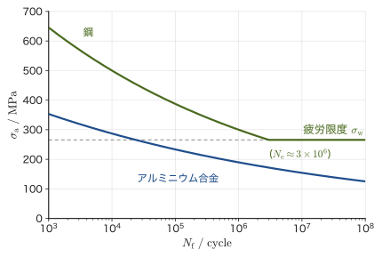
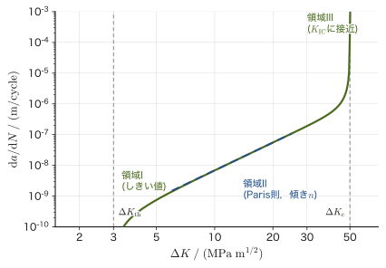
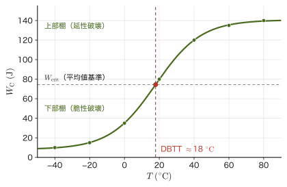
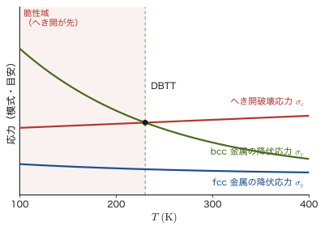
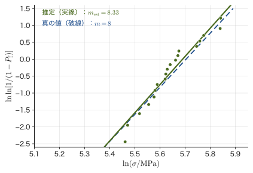
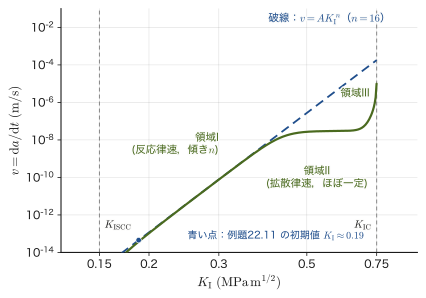

第22章疲労・強度のばらつき・環境による破壊
まっすぐなクリップを指で1回だけ大きく曲げても，ふつうは折れない．ところが同じ場所を前後に何度も曲げ伸ばししていると，やがて金属疲れを起こして，最初よりずっと小さな力でぽきりと折れてしまう．この「1回なら平気な力でも，くり返すと壊れる」という現象を疲労（fatigue）という．飛行機の機体，橋，自動車のばね，人工関節——現実の構造物の多くは，静かに一定の力を受け続けるのではなく，振動・離着陸・歩行のたびに応力が上がったり下がったりをくり返す．そのため，実際の破壊事故の大部分は，静的な強度計算だけでは説明できない疲労によって起きている．
もう1つ，第21章のGriffithの理論は「き裂の半長 $a$ が分かれば強度が決まる」という考え方だったが，現実には同じ材料・同じ形状の試験片を何本も壊しても，強度はぴったり同じ値にはならず，試験片ごとにばらつく．これは，試験片の中にどんな大きさの欠陥がどこにあるかが，試料ごとにわずかに違うからである．とくにセラミックスのように塑性変形でごまかしがきかない脆性材料では，このばらつきが無視できないほど大きく現れる．統計的に「何本中何本が壊れるか」を扱うWeibull統計は，この「強度のばらつき」を定量的に扱うための道具である．
さらに，材料は荷重だけでなく，温度変化や化学的な環境（水分・腐食性のイオンなど）によっても壊れることがある．冷たい水に急に浸けたセラミックスが割れる熱衝撃，一定の荷重をかけたまま長時間放置した高強度鋼やガラスが，ある日突然壊れる遅れ破壊・応力腐食割れも，本章で扱う「時間とともに進む破壊」の仲間である．本章では，第21章で学んだ応力拡大係数 $K_{\mathrm I}$ や破壊靱性 $K_{\mathrm{IC}}$ を土台にしながら，「くり返し」「ばらつき」「環境」という3つの切り口から，破壊力学を実際の設計に使える形まで広げる．本章は，マテリアル創成工学科が扱う構造材料・機能材料の信頼性設計（何年，何回のくり返し，どんな環境まで安全と言えるか）に直結する内容でもある．
本章は，標準的な材料強度学・破壊力学の教科書と原論文にもとづいて書いた．なお，記号について先に断っておく：本章ではポアソン数は使わず，ポアソン比 $\nu$ だけを用いる（第21章と同じ）．Paris則のべき指数は $n$，Weibull統計のばらつき係数は $m$ と書いて区別する．また，第19章のHollomonの式の加工硬化指数 $n$ とこの章のParis則の指数 $n$ は別の量である（章が違えば別の量として読む）．
- 疲労のS–N曲線と疲労限度の意味（鋼のように疲労限度がはっきり現れる材料と，アルミニウム合金のように現れない材料の違い）
- Basquin則 $\sigma_{\mathrm a}=\sigma'_{\mathrm f}(2N_{\mathrm f})^b$ ——両対数グラフで直線になるべき乗則としての疲労寿命の表し方
- 破壊力学とのつながり：Paris則 $\dd a/\dd N=C(\Delta K)^n$ にもとづくき裂進展と，寿命を求める積分（$n\neq2$ の場合の閉じた式）
- Miner則（線形累積損傷則）による，大きさの異なる荷重が混在するときの疲労寿命の見積もり
- 延性–脆性遷移温度（DBTT）とシャルピー衝撃試験，bccとfcc金属で遷移の現れ方が違う理由
- 最弱リンクモデルから導かれるWeibull分布 $P_{\mathrm f}=1-\exp[-(V/V_0)(\sigma/\sigma_0)^m]$ と，Weibullプロット（両対数グラフの傾きが $m$）
- 強度の寸法効果 $\sigma_1/\sigma_2=(V_2/V_1)^{1/m}$ と，3点曲げ試験の有効体積 $V_{\mathrm{eff}}=V/\{2(m+1)^2\}$
- 熱衝撃抵抗 $\Delta T_{\mathrm c}=\sigma_{\mathrm f}(1-\nu)/(E\alpha)$ と，熱伝導率も含めた実用上の指標
- 応力腐食割れ・遅れ破壊・亜臨界き裂進展 $v=AK_{\mathrm I}^n$ ——一定の荷重・環境のもとで時間とともに進む破壊
もとにしたノート：本章はノートにない内容を補った章である．関連するノート：望月泰英『物理学ノート 材料力学』（手書き講義ノート，全6ページ）．内容は望月研究室の破壊力学シミュレーター（fracture-derivation.html，fracture-simulator.html）と記号・数値例を揃えてある．
22.1 疲労とは何か — S–N曲線と疲労限度
金属の疲労がはじめて広く知られるようになったのは，19世紀半ばの鉄道車両の車軸の破損事故がきっかけだった．一定以下の荷重なら何回でも安全なはずの車軸が，走行をくり返すうちにある日突然折れる——August Wöhler（1860年代）は，車軸に一定振幅の応力をくり返しかける試験を系統的に行い，「かける応力の大きさ」と「壊れるまでのくり返し数」の関係を初めて定量的に整理した．この関係を図示したものを，今日でもS–N曲線（S–N curve，またはWöhler曲線）と呼ぶ．
なぜ：小さな力のくり返しで壊れるのはなぜか — 疲労破壊のようす
降伏応力（材料が塑性変形を始める応力）よりずっと小さい応力でも，くり返すと壊れるのは，金属の中で次の 3 段階がゆっくり進むからである．
- き裂の発生．金属は小さな結晶粒の集まりである．表面近くの結晶粒では，応力が低くても，特定のすべり面（結晶の原子面が互いにずれる面）で，行き来するすべりが少しずつ蓄積する．この往復の変形は元どおりには戻りきらず，表面に小さな「押し込み」と「突出し」の凹凸ができ，やがて結晶粒程度の大きさの微小き裂になる．傷・切欠き・穴のまわりのように応力が集中する場所では，この段階がずっと早く進む．
- き裂の進展．微小き裂は，引張の応力がかかるたびに先端で少しだけ塑性変形して，前へ少しだけ進む．破面を電子顕微鏡で見ると，1 サイクルごとの前進の跡が細かい縞（ストライエーション，striation）として残る．荷重の大きさが変わった節目は，肉眼でも貝殻のような模様（ビーチマーク，beach mark）として見える．この段階の進み方を式で表したものが，22.3節のParis則である．
- 最終破断．き裂が伸びると，残った断面が小さくなって応力が上がり，き裂も長くなって応力拡大係数が大きくなる．やがて最大応力のときに $K_{\max}$ が $K_{\mathrm{IC}}$ に達し，残りの断面が一気に破断する（22.3節）．
疲労破面は，このため，なめらかで縞のある疲労進展部分と，粗い最終破断部分の 2 つに分かれる．また，寿命がおよそ $10^4$ サイクルより短い，大きな塑性変形をともなう疲労を低サイクル疲労（low-cycle fatigue），それより長い寿命で，巨視的には弾性変形の範囲で起こる疲労を高サイクル疲労（high-cycle fatigue）という．本章のS–N曲線とBasquin則は，おもに高サイクル疲労を扱う（低サイクル疲労は塑性ひずみの振幅で整理し，Coffin–Manson則という経験則で表す）．
定義22.1 応力振幅・平均応力・応力比
疲労試験では，応力は時間とともに周期的に変化する．最大値を $\sigma_{\max}$，最小値を $\sigma_{\min}$ とすると，
$$ \sigma_{\mathrm a}=\frac{\sigma_{\max}-\sigma_{\min}}2,\qquad \sigma_{\mathrm m}=\frac{\sigma_{\max}+\sigma_{\min}}2,\qquad \Delta\sigma=\sigma_{\max}-\sigma_{\min}=2\sigma_{\mathrm a},\qquad R=\frac{\sigma_{\min}}{\sigma_{\max}} $$をそれぞれ応力振幅（stress amplitude），平均応力（mean stress），応力範囲（stress range），応力比（stress ratio）と呼ぶ．平均応力0（$\sigma_{\min}=-\sigma_{\max}$，$R=-1$）の対称な繰返しを両振り，$\sigma_{\min}=0$（$R=0$）で引張側だけをくり返す場合を片振りという．S–N曲線は，通常この振幅 $\sigma_{\mathrm a}$（または片振りなら最大応力）と，破断に至るまでのくり返し数 $N_{\mathrm f}$（破断繰返し数）の関係として描かれる．
図22.1は，鋼とアルミニウム合金のS–N曲線を模式的に示したものである（横軸は対数目盛り）．どちらの材料でも，応力振幅 $\sigma_{\mathrm a}$ を大きくするほど寿命 $N_{\mathrm f}$ は短くなるが，2つの材料でその減り方には決定的な違いがある．

定義22.2 疲労限度
くり返し数 $N_{\mathrm f}\to\infty$ としても破断しない応力振幅の上限を疲労限度（fatigue limit）$\sigma_{\mathrm w}$ といい，耐久限度（endurance limit）ともいう．鋼をはじめとする多くの体心立方（bcc）金属では，$10^6$–$10^7$ サイクル程度を境にS–N曲線がほぼ水平になり，疲労限度が明瞭に現れる．代表的な構造用鋼では，経験的に $\sigma_{\mathrm w}\approx0.4$–$0.5\times\sigma_{\mathrm B}$（$\sigma_{\mathrm B}$：引張強さ）程度になることが知られている．疲労限度が明瞭でない材料では，あらかじめ決めた設計寿命（たとえば $10^8$ サイクル）に対応する応力振幅を時間強度（fatigue strength）と呼び，疲労限度の代わりに使う．
なぜ鋼には疲労限度が現れ，アルミニウム合金には現れにくいのか
まず結晶構造の用語を確認しておく．金属の結晶は，原子が規則正しく並んだものである．立方体の 8 つの頂点と中心に原子が並ぶ構造を体心立方（body-centered cubic，bcc），8 つの頂点と 6 つの面の中心に原子が並ぶ構造を面心立方（face-centered cubic，fcc），六角柱を基本にして原子を最も密に積み重ねた構造を六方最密（hexagonal close-packed，hcp）という．室温の鉄・鋼は bcc，アルミニウム・銅・ニッケルは fcc，チタン・マグネシウム・亜鉛は hcp である．
疲労限度の原因には，次の 2 つの見方がある．(1) 標準的な説明は，限度以下でも微小き裂はできるが，進展せずに止まるというものである．応力振幅が小さいと，表面の結晶粒の中にできた微小き裂は，結晶粒界などの組織の障壁にぶつかって止まってしまう（非進展き裂）．22.3節で学ぶ，き裂が進み始める下限の値 $\Delta K_{\mathrm{th}}$ と結びつけると，長さ $a$ のき裂が進めない条件は $Y\Delta\sigma\sqrt{\pi a}\lt\Delta K_{\mathrm{th}}$ である．両振り（$R=-1$）では引張側の範囲 $\sigma_{\mathrm a}$ だけを数えるので，疲労限度は $\sigma_{\mathrm w}\approx\Delta K_{\mathrm{th}}/(Y\sqrt{\pi a})$ と書ける．たとえば $\Delta K_{\mathrm{th}}=3\ \mathrm{MPa\sqrt m}$，$Y=1.12$，$\sigma_{\mathrm w}=266\ \mathrm{MPa}$ なら $a\approx32\ \mu\mathrm m$ となり，結晶粒程度の大きさのき裂までしか進めないことを表している．(2) 鋼の中の炭素や窒素などの侵入型固溶原子（結晶格子の原子のすきまに入り込んだ原子）が，転位（結晶のずれを運ぶ線状の格子欠陥）のまわりに集まって転位を動きにくく固定する（ピン止め，Cottrell 雰囲気，ひずみ時効）ことも，小さな応力でのすべりの蓄積を妨げて，疲労限度を生む一因と考えられている．
一方，アルミニウム合金のような fcc 金属の多くは，このようなピン止めが弱く，応力振幅をどれだけ下げても，くり返し数を十分大きくすればいつかは破断する，つまり明瞭な疲労限度を示さないことが多い．ただし，これは典型的な傾向であって，例外もある（たとえばチタン合金（hcp）は疲労限度を示すことがあり，fcc のオーステナイト系ステンレス鋼にも疲労限度が現れる場合がある）．疲労限度が明瞭でない材料の設計では，$10^8$ サイクルなどの設計寿命を決め，そのくり返し数に対応する応力振幅（時間強度）以下に応力を抑える．航空機の機体にアルミニウム合金が多用されてきた一方で，機体構造の疲労管理がとりわけ重要視されてきた背景には，この性質も関わっている（22.3節のコメット機の事故も参照）．
応用：無限寿命設計と有限寿命設計
疲労限度がはっきり現れる材料では，使用中の応力振幅を疲労限度以下に抑えることで，理論上何回くり返しても壊れない設計（無限寿命設計，infinite-life design）が可能になる．自動車のコイルばねや，据え置き型の機械の軸受などは，この考え方で設計されることが多い．一方，疲労限度が明瞭でない材料や，軽量化のためにやや高い応力を許容せざるを得ない場合（航空機の機体，回転翼など）には，「何回のくり返しまでなら安全か」を見積もり，それに対応する寿命（例えば運航時間や飛行回数）が来たら検査・交換する有限寿命設計（safe-life design）がとられる．さらに，き裂があることを前提にして，定期検査で見つけたき裂の進展を予測しながら運用する損傷許容設計（damage tolerance design）という考え方もある（22.3節）．22.2節以降で学ぶBasquin則やParis則は，これらの寿命の見積もりに使われる数式である．
例題22.1 S–N曲線の読み取りと疲労限度
図22.1の鋼のS–N曲線（22.2節で学ぶBasquin則で $\sigma'_{\mathrm f}=1499.9\ \mathrm{MPa}$，$b=-0.1109$ として描いてある）について，(1) 応力振幅 $\sigma_{\mathrm a}=400\ \mathrm{MPa}$ で使ったとき，おおよそ何回のくり返しで破断すると読み取れるか．(2) この鋼の疲労限度 $\sigma_{\mathrm w}$ はおよそ何MPaか．(3) 応力振幅 $\sigma_{\mathrm a}=200\ \mathrm{MPa}$ で使い続けたとき，鋼とアルミニウム合金（青の曲線）とで，くり返し数を増やしたときのふるまいがどう違うか，理由とともに述べよ．
解答 (1) 図22.1で鋼の曲線（緑）が $\sigma_{\mathrm a}=400\ \mathrm{MPa}$ の高さを横切る位置を横軸で読むと，$10^4$ と $10^5$ の間の $10^5$ に近いところ，およそ $N_{\mathrm f}\approx7\times10^4$–$8\times10^4$ サイクルと読み取れる（22.2節の式\eqref{eq:22-basquin}で確かめると，$N_{\mathrm f}=\tfrac12(400/1499.9)^{1/(-0.1109)}\approx7.5\times10^{4}$）．(2) 曲線が水平に折れ曲がる高さを読むと，疲労限度は $\sigma_{\mathrm w}\approx266\ \mathrm{MPa}$ 程度である．(3) $200\ \mathrm{MPa}$ は鋼の疲労限度（約 $266\ \mathrm{MPa}$）より小さいので，鋼は，何回くり返しても壊れない（無限寿命）．一方，アルミニウム合金の曲線には水平な部分がなく，$200\ \mathrm{MPa}$ の高さを横切る位置は $N_{\mathrm f}\approx5\times10^5$ サイクル付近である．すなわち，同じ応力振幅でも，くり返しを重ねればいずれ破断し，「無限寿命」は期待できない．アルミニウム合金では，設計寿命（許容するくり返し数）をあらかじめ決めて，それに対応する応力振幅以下に抑える有限寿命設計が必要になる．
22.2 Basquin則 — べき乗則で表す疲労寿命
図22.1のS–N曲線を，疲労限度が現れるまでの右下がりの部分だけに注目して，横軸・縦軸の両方を対数目盛りで描き直すと，多くの材料でほぼ直線になることが経験的に知られている．「両対数グラフで直線になる」というのは，対数の性質から分かるように，2つの量がべき乗則 $y=cx^p$ の関係にあることのしるしである（$\ln y=\ln c+p\ln x$ となり，$\ln x$ を横軸，$\ln y$ を縦軸にとれば傾き $p$，切片 $\ln c$ の直線になる）．O. H. Basquin（1910年）は，この経験則を疲労寿命に適用し，次の式を提案した．
法則22.1 Basquin則
応力振幅 $\sigma_{\mathrm a}$ と破断繰返し数 $N_{\mathrm f}$ の間には，近似的に次のべき乗則が成り立つ：
\begin{equation} \sigma_{\mathrm a}=\sigma'_{\mathrm f}\,(2N_{\mathrm f})^{b} \label{eq:22-basquin} \end{equation}ここで $\sigma'_{\mathrm f}$ は疲労強度係数（fatigue strength coefficient，単位はMPaなど応力の単位），$b$ は疲労強度指数（fatigue strength exponent，無次元の負の定数，多くの金属でおよそ $-0.05$ から $-0.15$ 程度の値をとる）である．$2N_{\mathrm f}$（半サイクル数，reversal数）を使うのは，疲労試験のデータ整理の慣例による．両辺の対数をとると
$$ \ln\sigma_{\mathrm a}=\ln\sigma'_{\mathrm f}+b\ln(2N_{\mathrm f}) $$となり，$\ln(2N_{\mathrm f})$ を横軸，$\ln\sigma_{\mathrm a}$ を縦軸にとった両対数グラフでは，傾き $b$，$N_{\mathrm f}=1/2$（$2N_{\mathrm f}=1$）での切片が $\ln\sigma'_{\mathrm f}$ となる直線になる．
注意：Basquin則はあくまで経験式である
Basquin則は，多くの金属材料の疲労データによく合う経験的な近似であり，21.1節のGriffithの式のように物理法則から厳密に導かれたものではない．とくに，疲労限度を持つ鋼のS–N曲線全体を1本のべき乗則だけで表すことはできない：式\eqref{eq:22-basquin}は，疲労限度に折れ曲がる手前の右下がりの区間（有限寿命域）でのみ良い近似になり，疲労限度 $\sigma_{\mathrm w}$ 以下では別扱いにする必要がある（図22.1の鋼の曲線が，Basquin則の直線部分と，$N_{\mathrm e}$ 以降の水平部分の組み合わせで描かれているのはこのためである）．疲労限度を持たないアルミニウム合金では，測定範囲全体でBasquin則が良い近似になることが多い．
例題22.2 2点のデータからBasquin則の定数を求め，寿命を予測する
ある鋼について，疲労試験から次の2点のデータが得られた：$\sigma_{\mathrm a}=500\ \mathrm{MPa}$ で $N_{\mathrm f}=10^4$ サイクル，$\sigma_{\mathrm a}=300\ \mathrm{MPa}$ で $N_{\mathrm f}=10^6$ サイクル．(1) Basquin則の定数 $\sigma'_{\mathrm f}$，$b$ を求めよ．(2) $\sigma_{\mathrm a}=350\ \mathrm{MPa}$ での疲労寿命 $N_{\mathrm f}$ を予測せよ．
解答 (1) 式\eqref{eq:22-basquin}に2組の値を代入すると，
$$ 500=\sigma'_{\mathrm f}(2\times10^4)^b,\qquad 300=\sigma'_{\mathrm f}(2\times10^6)^b $$辺々の比をとると $\sigma'_{\mathrm f}$ が消えて，
$$ \frac{500}{300}=\left(\frac{2\times10^4}{2\times10^6}\right)^{b}=(10^{-2})^{b} $$両辺の自然対数をとると $\ln(500/300)=b\ln(10^{-2})=-2b\ln10$ なので，
$$ b=-\frac{\ln(500/300)}{2\ln10}=-\frac{0.5108}{4.6052}\approx-0.1109 $$これを最初の式に戻して $\sigma'_{\mathrm f}=500/(2\times10^4)^{b}\approx1499.9\ \mathrm{MPa}$ を得る（図22.1の鋼の曲線も，この $\sigma'_{\mathrm f},b$ を使って描いてある）．
(2) 式\eqref{eq:22-basquin}を $2N_{\mathrm f}$ について解くと $2N_{\mathrm f}=(\sigma_{\mathrm a}/\sigma'_{\mathrm f})^{1/b}$ なので，$\sigma_{\mathrm a}=350\ \mathrm{MPa}$ を代入して，
$$ 2N_{\mathrm f}=\left(\frac{350}{1499.9}\right)^{1/(-0.1109)}\approx4.98\times10^5 \qquad\therefore\ N_{\mathrm f}\approx2.5\times10^5\ \text{サイクル} $$すなわち，応力振幅を500 MPaから350 MPaへとおよそ3割下げるだけで，寿命は $10^4$ サイクルのオーダーから $10^5$ サイクルのオーダーへ，1桁以上のびることが分かる——疲労設計で応力を少し下げることがきわめて効果的である理由である．
22.3 破壊力学からの接続 — Paris則とき裂進展寿命の積分
22.2節のBasquin則は，材料全体を1つの応力振幅と寿命の関係で扱う，いわば「ブラックボックス」的な経験則だった．これに対し，第21章で学んだ破壊力学の考え方を使うと，疲労を「き裂が少しずつ伸びていく過程」として，もう一歩踏み込んで扱うことができる．P. C. Paris（1961年ごろ）は，くり返し応力のもとでのき裂進展速度 $\dd a/\dd N$（1サイクルあたりのき裂長さの伸び）が，そのサイクルでの応力拡大係数の変化幅（応力拡大係数幅）
$$ \Delta K=K_{\max}-K_{\min}=Y\,\Delta\sigma\sqrt{\pi a} $$だけでほぼ決まることを見出した．ここで $\Delta\sigma=\sigma_{\max}-\sigma_{\min}$ は応力範囲（定義22.1），$Y$ は第21章の形状係数である．
なぜ $\Delta K$ が進展速度を決めるのだろうか．第21章で学んだように，き裂先端のまわりの応力の大きさは，応力拡大係数 $K_{\mathrm I}$ だけで決まる．したがって，形も大きさも荷重も違う 2 つの部材でも，くり返しの間の $K_{\mathrm I}$ の変化幅 $\Delta K$ が同じなら，き裂先端では同じ応力の変動がくり返されているので，き裂も同じ速さで進むはずだと考えられる．なお，$R\lt0$ のとき応力は圧縮側にもふれるが，圧縮ではき裂が閉じて先端に引張の応力がかからないので，$\Delta K$ を計算するときは引張側だけを数える（$\sigma_{\min}$ を 0 とみなして $\Delta\sigma=\sigma_{\max}$ とする）のが慣例である．
法則22.2 Paris則
疲労き裂の進展速度は，応力拡大係数幅 $\Delta K$ のべき乗則で近似できる：
\begin{equation} \frac{\dd a}{\dd N}=C(\Delta K)^{n} \label{eq:22-paris} \end{equation}$C,n$ は材料（と環境）で決まる定数である．ここでの指数は，Weibull係数の $m$（22.6節）と区別するため，$n$ と書く．多くの金属で $n\approx2$–$4$ 程度の値をとる．
図22.2のように，実際のき裂進展速度を横軸 $\Delta K$，縦軸 $\dd a/\dd N$ の両対数グラフに描くと，中間の領域（領域II）でParis則どおりの直線になる．それより $\Delta K$ が小さい領域Iでは，ある値 $\Delta K_{\mathrm{th}}$（下限界応力拡大係数幅，threshold）を下回るとき裂がほとんど進まなくなり，逆に $\Delta K$ が大きい領域IIIでは，破壊靱性 $K_{\mathrm{IC}}$（第21章）に近づくにつれて進展速度が急激に増加し，最終的に不安定破壊（$K_{\mathrm I}=K_{\mathrm{IC}}$）に至る．設計でとくに重要なのは，直線的にふるまう領域IIである．

22.3.1 Paris則を積分して寿命を求める（$n\neq2$ の閉じた式）
式\eqref{eq:22-paris}に $\Delta K=Y\Delta\sigma\sqrt{\pi a}$ を代入する．ここでは，もっとも簡単な場合として，(i) $Y$ と $\Delta\sigma$ はき裂が伸びても変わらない，(ii) き裂長さは部材の幅より十分小さい（幅に近づくと $Y$ が変わってしまう），と仮定する．すると，
$$ \frac{\dd a}{\dd N}=C\left(Y\Delta\sigma\sqrt{\pi a}\right)^{n}=C(Y\Delta\sigma)^n\pi^{n/2}a^{n/2} $$という，$a$ と $N$ を分離できる微分方程式（変数分離形，大学数学 第33章）になる．初期き裂長さ $a_0$ から，破壊靱性で決まる臨界き裂長さ $a_{\mathrm c}$ まで伸びるのに要するサイクル数 $N_{\mathrm f}$ を求めよう．
不安定破壊は，くり返しのうち応力が最大のときに $K_{\max}=Y\sigma_{\max}\sqrt{\pi a}$ が $K_{\mathrm{IC}}$ に達して起こる．したがって臨界き裂長さは，応力範囲 $\Delta\sigma$ ではなく最大応力 $\sigma_{\max}$ から決まり，
\begin{equation} a_{\mathrm c}=\frac1\pi\left(\frac{K_{\mathrm{IC}}}{Y\sigma_{\max}}\right)^2 \label{eq:22-ac} \end{equation}である（第21章の破壊条件と同じ形）．$\Delta K$ には $\Delta\sigma$ を，破壊の判定には $\sigma_{\max}$ を使うことに注意する．$R=0$ の片振りでは $\sigma_{\max}=\Delta\sigma$ で両者は一致するが，一般には違う値である（たとえば $R=0.5$ では $\Delta\sigma=0.5\,\sigma_{\max}$）．
導出：Paris則の積分による疲労寿命（$n\neq2$）
両辺を変数分離すると，
$$ \frac{\dd a}{a^{n/2}}=C(Y\Delta\sigma)^n\pi^{n/2}\,\dd N $$左辺を $a=a_0$ から $a=a_{\mathrm c}$ まで，右辺を $N=0$ から $N=N_{\mathrm f}$ まで積分する．左辺の積分はべき関数の積分（大学数学 第5章）で，指数 $-n/2$ が $-1$ でない限り（すなわち $n\neq2$ の場合），
$$ \int_{a_0}^{a_{\mathrm c}}a^{-n/2}\,\dd a=\left[\frac{a^{1-n/2}}{1-n/2}\right]_{a_0}^{a_{\mathrm c}}=\frac{a_{\mathrm c}^{\,p}-a_0^{\,p}}{p},\qquad p\equiv1-\frac n2 $$となる（$p$ は指数をまとめて書くための略記）．右辺は定数の積分なので $C(Y\Delta\sigma)^n\pi^{n/2}N_{\mathrm f}$ である．両辺を等しいとおいて $N_{\mathrm f}$ について解くと，
\begin{equation} N_{\mathrm f}=\frac{a_{\mathrm c}^{\,p}-a_0^{\,p}}{p\,C(Y\Delta\sigma)^{n}\pi^{n/2}},\qquad p=1-\frac n2\quad(n\neq2) \label{eq:22-paris-life} \end{equation}（導出終わり）
$a_0\ll a_{\mathrm c}$ で $n\gt2$（$p\lt0$）のときは，$a^{p}$ は $a$ が小さいほど大きいので，$a_{\mathrm c}^{\,p}$ は $a_0^{\,p}$ に比べて無視でき，式\eqref{eq:22-paris-life}は $N_{\mathrm f}\approx a_0^{\,p}\big/\{|p|\,C(Y\Delta\sigma)^n\pi^{n/2}\}$ となる．寿命はほとんど初期き裂の大きさ $a_0$ と応力範囲 $\Delta\sigma$ で決まり，$N_{\mathrm f}\propto(\Delta\sigma)^{-n}$ である．
注意：$n=2$ のときは対数になる
式\eqref{eq:22-paris-life}の指数 $p=1-n/2$ が0になる $n=2$ の場合，途中の積分 $\int a^{-1}\dd a=\ln a$ となり，べき乗の公式は使えない（$0$ で割ることになってしまう）．この場合は最初からやり直して，
$$ N_{\mathrm f}=\frac{1}{C(Y\Delta\sigma)^2\pi}\ln\!\frac{a_{\mathrm c}}{a_0}\qquad(n=2) $$という対数の形になる（$n=2$ の場合を別に計算し，数式処理ソフトでも確かめた）．
例題22.3 Paris則の積分による疲労寿命の計算
ある鋼の広い板の表面に，初期き裂長さ（深さ）$a_0=1\ \mathrm{mm}$ の縁き裂（形状係数 $Y=1.12$，第21章）がある．$R=0$ の片振りで応力範囲 $\Delta\sigma=100\ \mathrm{MPa}$（このとき $\sigma_{\max}=\Delta\sigma=100\ \mathrm{MPa}$）をくり返しかける．Paris則の定数を，$\Delta K$ を $\mathrm{MPa\sqrt m}$，$\dd a/\dd N$ を $\mathrm{m/cycle}$ で表したときの値として $C=6.9\times10^{-12}$，$n=3$ とし，破壊靱性を $K_{\mathrm{IC}}=50\ \mathrm{MPa\sqrt m}$ として，き裂が不安定破壊に至るまでの疲労寿命 $N_{\mathrm f}$ を求めよ．
解答 まず臨界き裂長さを，式\eqref{eq:22-ac}から求める（$\sigma_{\max}=100\ \mathrm{MPa}$）：
$$ a_{\mathrm c}=\frac1\pi\left(\frac{50}{1.12\times100}\right)^2\ \mathrm m=\frac1\pi\times0.1993\ \mathrm m\approx0.06344\ \mathrm m=63.4\ \mathrm{mm} $$$n=3\neq2$ なので式\eqref{eq:22-paris-life}が使える．$p=1-3/2=-1/2$ であり，
$$ N_{\mathrm f}=\frac{a_{\mathrm c}^{-1/2}-a_0^{-1/2}}{(-1/2)\,C(Y\Delta\sigma)^{3}\pi^{3/2}} $$数値を代入すると（$a_{\mathrm c}=0.06344\ \mathrm m$，$a_0=0.001\ \mathrm m$，$Y\Delta\sigma=112\ \mathrm{MPa}$），
$$ N_{\mathrm f}\approx1.02\times10^{6}\ \text{サイクル} $$となる（数値積分による直接確認でも一致した）．単位の確認：分母の $C(Y\Delta\sigma)^3\pi^{3/2}$ は $\mathrm{m/cycle}\cdot(\mathrm{MPa\sqrt m})^{-3}\cdot\mathrm{MPa}^3=\mathrm{m^{-1/2}/cycle}$ で，分子 $a^{-1/2}$ の単位 $\mathrm{m^{-1/2}}$ との比はサイクル数になり，整合している．
同じ式で $a_0$ を半分の $0.5\ \mathrm{mm}$ にすると $N_{\mathrm f}\approx1.51\times10^{6}$ サイクルとなり，寿命はおよそ1.5倍（比は1.47）にのびる——初期き裂を小さく保つ（研削・検査で表面欠陥を減らす）ことが疲労寿命に効くことが分かる．なお，$a_{\mathrm c}=63\ \mathrm{mm}$ という大きな値は，板の幅が十分広いことを仮定して得たものである．実際の板ではき裂が幅に近づくと $Y$ が $1.12$ から変わってしまう．ただし，積分の値の大部分はき裂の小さい間（$a_0$ 付近）で決まる（$a^{-3/2}$ は小さい $a$ ほど大きい）ので，この見積もりへの影響は小さい．
考察：Basquin則・Paris則・疲労限度のつながり
22.1節〜22.3節の内容は別々の話ではなく，同じ現象を違う側面から見たものである．
寿命の 2 つの部分．疲労寿命は，き裂が生じるまでのくり返し数と，そのき裂が進展して破断するまでのくり返し数の和である．Paris則の積分（式\eqref{eq:22-paris-life}）は，後者（初期き裂 $a_0$ がすでにある場合の進展寿命）を表す．一方，き裂のない滑らかな試験片で測るS–N曲線とBasquin則は，両方を合わせた全寿命を表す．
指数の関係．$a_0\ll a_{\mathrm c}$，$n\gt2$ なら $N_{\mathrm f}\propto(\Delta\sigma)^{-n}$ であった．Basquin則は $N_{\mathrm f}\propto\sigma_{\mathrm a}^{\,1/b}$ と書き直せるので，寿命の大部分が進展で占められるなら，$1/b\leftrightarrow-n$，すなわち $b\approx-1/n$ という対応が期待される．しかし実際の $b$ は $-0.05$〜$-0.15$（$1/|b|$ にして $7$〜$20$）で，$n\approx2$–$4$ よりずっと大きい．これは，滑らかな試験片ではき裂が生じるまでの寿命が全寿命の大きな部分を占め，しかもその部分が応力にいっそう敏感なためと考えられる．
疲労限度との関係．$\Delta K\lt\Delta K_{\mathrm{th}}$ ではき裂は進まない．この条件を応力に直すと，長さ $a$ のき裂に対して $\Delta\sigma\lt\Delta K_{\mathrm{th}}/(Y\sqrt{\pi a})$ となり，22.1節の疲労限度の見方（非進展き裂）にそのまま対応する．欠陥が小さいほど進展のしきい値の応力は高くなり，疲労限度は材料中の最大級の欠陥の大きさで決まる（北川・高橋の考え方．き裂が非常に小さくなると $\Delta K_{\mathrm{th}}$ 自体が下がるので，この関係は $a$ が十分大きい範囲で成り立つ）．
歴史：デ・ハビランド コメット機の疲労破壊（1954年）
世界初のジェット旅客機デ・ハビランド コメット（de Havilland Comet）は，運航開始（1952年）から間もない1954年1月（エルバ島沖）と4月（ナポリ沖）に，高度の高い空を飛行中に空中分解する事故を続けて2件起こした．原因の調査では，実物の機体を水槽に沈めて，与圧と除圧をくり返す試験（機体の内外の圧力差で外板に周期的な応力をかける，当時としては画期的な方法）が行われた．エルバ島沖に墜落した機体の残骸からは，客室屋根にある自動方向探知機（ADF）用アンテナ窓のそばの穴（リベット穴・ボルト穴）から疲労き裂が始まっていたことが分かった．事故機の与圧サイクル数（飛行回数）は，1月の機体で約1300回，4月の機体で約900回である．同型の胴体を水槽で加圧・除圧する試験では，累積で3000回あまり（3057回．このうち約1230回は実際の運航での回数）で胴体が破壊した．このとき破壊の起点になったのは，前方の非常口の切欠きの角である．どちらも，疲労き裂がじわじわ進んだあと，ついに機体の破壊靱性を超えて胴体が一気に不安定破壊したものである．窓や非常口のような開口部の角は応力集中が強く，疲労き裂の発生を早めた．
この事故を機に，航空機の設計では疲労が最重要の検討項目になった．1か所が壊れても全体は壊れないように設計する fail-safe（フェイルセーフ）や，設計寿命のあいだ疲労き裂を発生させない safe-life の考え方が広まった．き裂の存在を前提に，検査でき裂を見つけて残りの寿命をき裂進展から見積もる損傷許容設計（damage tolerance design）は，破壊力学の発展とともに 1970 年代に規格化されている．Paris則が見出された（1961〜63年）のは事故のあとだが，今日なら，あのき裂の進展はParis則で見積もることができる．本節の積分は，まさに「き裂が見つかったとき，あとどれだけ運用できるか」を見積もるための道具である．
22.4 Miner則 — 線形累積損傷則
22.2節・22.3節のBasquin則やParis則は，一定振幅の応力をかけ続けた場合の寿命を与える式だった．しかし実際の構造物（自動車，橋，機械）にかかる荷重は，時間とともに大きさの異なる応力振幅が混在するのがふつうである．異なる大きさの応力振幅がどんな順序・割合で混ざっていても寿命を見積もれるように，M. A. Miner（1945年，考え方自体はA. Palmgrenの1924年の提案に遡る）は，次のような単純な「損傷の足し算」の規則を提案した．
イメージ：疲労寿命を使い切っていく「残り寿命メーター」
応力振幅 $\sigma_i$ だけをかけ続けたときの寿命が $N_i$ サイクルだとすると，$\sigma_i$ を1サイクルかけるごとに，寿命の $1/N_i$ を「使い切った」と考える．いろいろな振幅の応力が混在していても，それぞれの振幅がもたらす「消耗の割合」を単純に足し合わせていき，合計が1（＝寿命を100%使い切った状態）に達したときに疲労破壊が起こる，というのがMiner則の考え方である．ガソリンの残量メーターが，走った距離に応じて単純に減っていくのに似ている（実際には運転の仕方で燃費が変わるように，本当の疲労損傷も荷重の順序に左右されるのだが，Miner則はそれを無視する近似である——22.4.1節を参照）．
法則22.3 Miner則（線形累積損傷則）
応力振幅 $\sigma_i$ の応力を $n_i$ サイクルかける荷重区間が $i=1,2,\dots,k$ の複数混在するとき，それぞれの振幅だけをかけ続けたときの寿命を $N_i$（Basquin則などから計算できる）とすると，損傷度 $D$ を
\begin{equation} D=\sum_{i=1}^{k}\frac{n_i}{N_i} \label{eq:22-miner} \end{equation}で定義し，$D=1$ に達したときに疲労破壊が起こると考える．$D\lt1$ ならまだ寿命が残っており，$D\ge1$ で破壊に至ったとみなす．（ここでの $n_i$ は段階 $i$ で実際にかけたくり返し数であり，添字のない Paris則の指数 $n$ とは別のものである．）
例題22.4 Miner則による累積損傷の計算
例題22.2と同じ鋼（$\sigma'_{\mathrm f}\approx1499.9\ \mathrm{MPa}$，$b\approx-0.1109$）に，次の3種類の応力振幅を，示した回数だけくり返しかけた．Miner則にもとづく損傷度 $D$ を求め，この部材は破壊に至るか判定せよ．
| $\sigma_i\ (\mathrm{MPa})$ | $n_i$（回数） |
|---|---|
| 450 | 2000 |
| 350 | 5000 |
| 280 | 50000 |
解答 それぞれの振幅について，Basquin則（式\eqref{eq:22-basquin}）から単独の寿命 $N_i$ を求める．例えば $\sigma_i=450\ \mathrm{MPa}$ では，
$$ 2N_i=\left(\frac{450}{1499.9}\right)^{1/(-0.1109)}\approx5.17\times10^{4}\qquad\therefore\ N_i\approx2.59\times10^{4} $$同様に $\sigma_i=350\ \mathrm{MPa}$ で $N_i\approx2.49\times10^{5}$，$\sigma_i=280\ \mathrm{MPa}$ で $N_i\approx1.86\times10^{6}$ となる．したがって各区間の損傷は，
$$ \frac{n_1}{N_1}=\frac{2000}{2.59\times10^4}\approx0.0774,\qquad \frac{n_2}{N_2}=\frac{5000}{2.49\times10^5}\approx0.0201,\qquad \frac{n_3}{N_3}=\frac{50000}{1.86\times10^6}\approx0.0268 $$式\eqref{eq:22-miner}よりこれらを足し合わせると，
$$ D\approx0.0774+0.0201+0.0268\approx0.124 $$$D\approx0.12\lt1$ なので，この部材はまだ破壊に至らない．この荷重パターン1回で寿命の約12.4%を使うので，$1/0.1242\approx8.05$ より，同じパターンをくり返すと，全部で8回（最初の1回を含む）で $D\approx0.994$，9回目の途中で $D=1$ に達して破壊すると見積もれる．
22.4.1 Miner則の限界
注意：Miner則は荷重の順序を考慮しない近似である
式\eqref{eq:22-miner}は，どの順序で応力振幅をかけても，同じ $n_i$ の組み合わせなら同じ $D$ になると仮定している．しかし実際の材料では，先に大きな応力を1回だけかけると，その周辺で局所的な塑性変形（降伏）が起こり，その後の疲労挙動（き裂の発生・進展のしやすさ）が変わってしまうことが知られている——たとえば，大きな引張応力を先にかけると，除荷後にき裂先端の周辺に，外力を取り除いても残る応力（残留応力）として圧縮の応力が残り，その後の小さな応力振幅に対してはむしろ寿命が延びる（過大荷重によるき裂進展の遅延効果）ことがある．逆に，順序によっては寿命が短くなる場合もある．こうした荷重順序効果（load sequence effect）は，Miner則には組み込まれていない．そのため実務では，Miner則は簡便な一次近似として使いつつ，重要な構造物ではより詳しい荷重順序を考慮した解析や実物大の疲労試験で設計を検証する．
そのほかにも，Miner則には次の限界がある．(1) 実験で疲労破壊が起きたときの $D$ は，ちょうど 1 にはならず，およそ $0.3$〜$3$ の範囲でばらつくことが知られている．(2) 疲労限度より小さい応力振幅は $N_i=\infty$ として $n_i/N_i=0$（損傷に寄与しない）とする扱いは，危険側（寿命を長く見積もりすぎる側）の評価になることがある．いったん大きな応力でき裂ができたあとでは，もとの疲労限度以下の小さな応力でも，き裂が進展しうるからである．
22.5 延性–脆性遷移とシャルピー衝撃試験
ここまでの疲労は，くり返し荷重によって少しずつ損傷が進む破壊だった．ここで少し話題を変え，「同じ材料が，温度によって壊れ方ががらりと変わる」という現象を見ておこう．鋼のような体心立方（bcc）金属の多くは，温度を下げていくと，ある温度を境に，粘り強く変形してから壊れる延性破壊（ductile fracture）から，ほとんど変形せずに突然壊れる脆性破壊（brittle fracture）へと壊れ方が急激に変化する．この変化を延性–脆性遷移（ductile-to-brittle transition）といい，その境目の温度を延性–脆性遷移温度（ductile-to-brittle transition temperature，DBTT）と呼ぶ．
22.5.1 シャルピー衝撃試験
DBTTを実験的に調べる代表的な方法が，シャルピー衝撃試験（Charpy impact test，G. Charpyが1901年に考案）である．標準的な試験片は，Vノッチと呼ばれる切欠き（深さ $2\ \mathrm{mm}$）を入れた，断面 $10\ \mathrm{mm}\times10\ \mathrm{mm}$，長さ $55\ \mathrm{mm}$ の角柱である．これを，ハンマーを備えた振り子で1回だけ打ち割り，試験片を割るのに使われたエネルギー（吸収エネルギー，absorbed energy，本書では $W_{\mathrm C}$ と書く．$E$ はヤング率の記号なので使わない．単位はJ）を，振り子が打撃前後で失った位置エネルギーの差から求める．同じ材料の試験片を，温度を変えながら何本も試験し，横軸を試験温度，縦軸を吸収エネルギーにとると，図22.3のような曲線が得られる．
定義22.3 上部棚・下部棚とDBTTの読み取り方
高温側でほぼ一定になる吸収エネルギーの高い水準を上部棚（upper shelf，延性破壊が支配的），低温側でほぼ一定になる低い水準を下部棚（lower shelf，脆性破壊が支配的）と呼ぶ．DBTTの決め方には，主に次の3通りがある：(i) 上部棚と下部棚の吸収エネルギーの平均値 $W_{\mathrm{crit}}=(W_{\mathrm{upper}}+W_{\mathrm{lower}})/2$ を横切る温度とする方法（平均値基準），(ii) あらかじめ決めた固定のエネルギー値（規格により異なる．構造用鋼では $27\ \mathrm J$ や $41\ \mathrm J$ がよく用いられる）を横切る温度とする方法（固定値基準），(iii) 破面のうち，光沢のある平らな脆性破面が占める割合（脆性破面率）が50%になる温度とする方法（破面率基準，FATT：fracture appearance transition temperature）．どれも実務・規格ごとの取り決めであり，物理的に唯一の「正しい」定義があるわけではないことに注意する．

応用：DBTTが実務でなぜ重要か
DBTTを下回る温度で使用される構造物（低温地域の橋梁・貯槽，寒冷地を航行する船舶，宇宙機など）では，静的な強度計算では十分安全なはずの応力でも，衝撃的な荷重（進水時の衝撃，波浪，地震動など）や，溶接部・切欠きなどの応力集中箇所をきっかけに，脆性的な破壊が瞬時に，かつ大きく（き裂が止まらずに）進んでしまう危険がある．そのため，低温で使用する鋼材の選定では，使用温度がその鋼のDBTTより十分低くならないように，シャルピー試験の結果をもとに材料規格が定められている．
例題22.5 シャルピー試験データからDBTTを読み取る
ある鋼のシャルピー衝撃試験で，次の吸収エネルギーが得られた．
| $T\ (^\circ\mathrm C)$ | $-40$ | $-20$ | $0$ | $20$ | $40$ | $60$ | $80$ |
|---|---|---|---|---|---|---|---|
| $W_{\mathrm C}\ (\mathrm J)$ | 10 | 15 | 35 | 80 | 120 | 135 | 140 |
(1) 平均値基準でDBTTを求めよ．(2) 固定値基準（$W_{\mathrm C}=27\ \mathrm J$）でDBTTを求めよ．いずれも，隣り合うデータ点の間を直線でつないで内挿してよい．
解答 (1) 上部棚 $W_{\mathrm{upper}}=140\ \mathrm J$（$80\,^\circ\mathrm C$ での値，これ以上高温にしてもほぼ一定と仮定），下部棚 $W_{\mathrm{lower}}=10\ \mathrm J$（$-40\,^\circ\mathrm C$ での値）なので，$W_{\mathrm{crit}}=(140+10)/2=75\ \mathrm J$．表より $W_{\mathrm C}=75\ \mathrm J$ は $T=0\,^\circ\mathrm C$（$35\ \mathrm J$）と $T=20\,^\circ\mathrm C$（$80\ \mathrm J$）の間にあるので，直線内挿すると，
$$ T_{\mathrm{DBTT}}=0+20\times\frac{75-35}{80-35}=20\times\frac{40}{45}\approx17.8\,^\circ\mathrm C $$(2) $W_{\mathrm C}=27\ \mathrm J$ は $T=-20\,^\circ\mathrm C$（$15\ \mathrm J$）と $T=0\,^\circ\mathrm C$（$35\ \mathrm J$）の間にあるので，
$$ T_{\mathrm{DBTT}}=-20+20\times\frac{27-15}{35-15}=-20+20\times\frac{12}{20}=-8\,^\circ\mathrm C $$2つの基準で読み取った値には約 $26\,^\circ\mathrm C$ の差があることに注意する．DBTTは基準の取り方に依存する量であり，異なる基準で求めた値をそのまま比較してはいけない（図22.3のなめらかな曲線で読んだ平均値基準の値も，約 $18\,^\circ\mathrm C$ で(1)と近い）．
22.5.2 なぜbcc金属で顕著に現れ，fcc金属では現れにくいのか
イメージ：降伏応力とへき開破壊応力の「競争」
結晶が塑性変形する（力を取り除いても元に戻らない変形をする）のは，転位が動くからである．転位を動かして塑性変形を始めるのに必要な応力が降伏応力 $\sigma_{\mathrm y}$ である．一方，き裂の先端の応力が，原子面がそのまま引き剥がされて割れる（へき開，cleavage）ための応力 $\sigma_{\mathrm c}$ に達すれば，材料は脆性的に割れる．材料は，この 2 つのどちらが先に達するかで壊れ方を選ぶ．
- $\sigma_{\mathrm y}\lt\sigma_{\mathrm c}$ のとき：割れる前に降伏して塑性変形し，き裂先端が鈍って応力が下がるので，粘り強い延性破壊になる．
- $\sigma_{\mathrm y}\gt\sigma_{\mathrm c}$ のとき：降伏する前にへき開の応力に達するので，ほとんど変形せずに脆性破壊する．
へき開応力 $\sigma_{\mathrm c}$ は原子どうしの結合の強さで決まり，温度にあまり依存しない．降伏応力 $\sigma_{\mathrm y}$ の温度依存性が，bcc 金属と fcc 金属でまったく違うのである（図22.4）．
- bcc 金属（鉄・鋼など）：転位（とくにらせん転位）が動くには，転位の線の一部が隣の安定な位置へ先に移り，そのずれが線に沿って広がる（キンク対の形成）必要がある．これには熱振動の助けが要る（熱活性化過程．結晶格子が転位に及ぼす摩擦にあたる抵抗をパイエルス応力（Peierls stress）という）．このため，温度が下がると熱振動の助けが減って，降伏応力 $\sigma_{\mathrm y}$ が急激に上昇する．$\sigma_{\mathrm y}$ が $\sigma_{\mathrm c}$ を超える温度以下では，塑性変形より先にへき開が起こる．この 2 つの曲線の交点付近の温度が DBTT である．
- fcc 金属（銅・アルミニウム・ニッケルなど）：転位が動きやすく，降伏応力の温度依存性が小さい．極低温でも $\sigma_{\mathrm y}\lt\sigma_{\mathrm c}$ のままなので，明瞭な延性–脆性遷移を示さず，極低温でも延性を保つ．
なお，すべり系（すべりやすい面と方向の組合せ）の数だけを比べると，bcc（{110}，{112}，{123} の各面をあわせて 48 系）のほうが fcc（12 系）より多く，この違いの原因はすべり系の数ではない．DBTTが実用上とくに問題になるのは，鋼のような bcc 金属（と，hcp の一部の金属）である．

歴史：リバティ船の脆性破壊（第二次世界大戦）
第二次世界大戦中，アメリカで大量生産された輸送船「リバティ船」（Liberty ship，約2710隻が建造された）は，戦時急造のため，従来のリベット接合ではなく，船体を溶接でつなぐ工法を大規模に採用した最初期の船舶の1つだった．溶接構造は製造が速いという利点があった一方，リベット接合の船体では，き裂が板の継ぎ目で行き止まりになる（リベット接合は板ごとに分かれているので，き裂は板から板へは伝わりにくい）のに対し，全溶接の船体は継ぎ目のない一体の構造なので，1か所で発生したき裂が止まらずに船体全体へ伝播しうるという弱点を抱えていた．戦時中，建造された約2710隻のうち1000隻をこえる船で脆性的な割れが記録され，重大な割れの件数は約1500件にのぼった．船体が完全に二つに折れたのは十数隻（12隻とする文献が多い）である（隻数と件数の区別も含め，数字は文献によって幅がある）．割れは，角ばったハッチ（甲板の開口部）の角や溶接部の欠陥から始まったものが多い．事故調査の結果，(i) 使用された鋼材のDBTTが，北大西洋の冬の海水温度（氷点に近い低温）よりも高く，運航条件下でしばしば脆性域で使われていたこと，(ii) 溶接部の欠陥・溶接による残留応力や，角の鋭い開口部（コメット機の窓の角，22.3節，とも共通する応力集中源）が，き裂発生の引き金になったこと，が明らかになった．この事故は，材料のじん性（衝撃に耐える能力）を考慮した鋼材選定と，溶接構造における応力集中・き裂伝播対策の重要性を示す教訓として，造船・鉄鋼業界の設計指針に大きな影響を与えた．
22.6 Weibull統計 — 最弱リンクモデルと強度のばらつき
第21章のGriffithの式 $\sigma_{\mathrm f}=\sqrt{2E\gamma_{\mathrm s}/(\pi a)}$（平面応力の場合）は，「き裂の半長 $a$ が分かれば強度 $\sigma_{\mathrm f}$ が決まる」という式だった．ところが，実際にセラミックスなどの脆性材料を何本も同じ条件で作って壊す実験をすると，強度はぴったり同じ値にはならず，試料ごとにばらつく．これは，試料の中にどんな大きさの欠陥（気孔，介在物，研削傷など）がいくつ，どこにあるかが，試料ごとに違うためである——弱点になりうる欠陥のうち，いちばん大きい（＝いちばん危険な）ものの大きさが試料ごとに違えば，Griffithの式にしたがって強度も試料ごとに違ってくる．この節では，この「試料ごとの欠陥のばらつき」を統計的に扱うためのWeibull統計を学ぶ．
22.6.1 最弱リンクモデル
鎖（くさり）は，どんなに頑丈な輪が並んでいても，いちばん弱い1つの輪が切れれば全体が切れてしまう．この「最弱リンク」（weakest link）の考え方は，F. T. Peirce（1926年）が綿糸の強度について提案したもので，W. Weibull（1939年）は，脆性材料の破壊もこれと同じ考え方で説明できると考えた——試料の中のたくさんの微小欠陥のうち，最も危険な1つが破壊の起点になれば，試料全体が壊れる．
導出：最弱リンクモデルからWeibull分布へ
試料を，独立に壊れるかどうかが決まる微小な体積要素（「輪」に相当する）に分割して考える．体積 $V_1$ の微小要素が，応力 $\sigma$ のもとで壊れずに生き残る確率を $p_{\mathrm s}(\sigma)$ とする．体積 $V$ の試料を，この微小要素 $V/V_1$ 個の集まりとみなし，各要素が独立に（他の要素の状態と無関係に）壊れるかどうかが決まるとすると，最弱リンクの仮定（どれか1つでも壊れれば試料全体が壊れる）より，試料全体が生き残る確率 $P_{\mathrm s}$ は，独立な事象がすべて起こる確率（各要素が生き残る確率の積，大学数学 第13章 13.5）で与えられる：
$$ P_{\mathrm s}(V,\sigma)=\underbrace{p_{\mathrm s}(\sigma)\times p_{\mathrm s}(\sigma)\times\cdots\times p_{\mathrm s}(\sigma)}_{V/V_1\ \text{個}}=\bigl[p_{\mathrm s}(\sigma)\bigr]^{V/V_1} $$両辺の対数をとると $\ln P_{\mathrm s}(V,\sigma)=(V/V_1)\ln p_{\mathrm s}(\sigma)$ となり，$\ln P_{\mathrm s}$ は体積 $V$ に比例することが分かる．そこで，単位体積あたりの「危険度」を $\varphi(\sigma)\equiv-\ln p_{\mathrm s}(\sigma)/V_1\ (\ge0)$ と定義すると，
\begin{equation} P_{\mathrm s}(V,\sigma)=\exp\bigl[-V\varphi(\sigma)\bigr] \label{eq:22-Ps-general} \end{equation}ここまでは，「微小要素は独立で，どれか1つが壊れれば試料全体が壊れる」という最弱リンクの仮定だけから導かれる一般的な関係であり，$\varphi(\sigma)$ の具体的な形はまだ決まっていない．Weibullは，多くの実験データに合うことを確かめたうえで，$\varphi(\sigma)$ を次のようなべき関数の形に仮定した（この形が自然に現れる理由は，後の枠で欠陥の分布から説明する）：
$$ \varphi(\sigma)=\frac1{V_0}\left(\frac{\sigma}{\sigma_0}\right)^{m} $$（$\sigma_0,V_0,m$ は正の定数．$\sigma\le0$ では壊れないとして $\varphi=0$ とする．）これを式\eqref{eq:22-Ps-general}に代入し，破壊確率 $P_{\mathrm f}=1-P_{\mathrm s}$ に書き直すと，Weibull分布の式が得られる：
$$ P_{\mathrm f}=1-\exp\left[-\frac V{V_0}\left(\frac\sigma{\sigma_0}\right)^{m}\right] $$（なお，Weibull分布は，多数の値の最小値がしたがう極値統計の分布の1つの型でもある．「最弱リンク」は「最小値」なので，自然な分布といえる．）
（導出終わり）
法則22.4 2母数Weibull分布（体積効果を含む）
体積 $V$ の試料が，応力 $\sigma$ のもとで破壊する確率は，
\begin{equation} P_{\mathrm f}=1-\exp\left[-\frac{V}{V_0}\left(\frac{\sigma}{\sigma_0}\right)^{m}\right] \label{eq:22-weibull} \end{equation}で与えられる．$m$ をWeibull係数（Weibull modulus，ばらつきの小ささを表す），$\sigma_0$ を体積 $V_0$ の試料の特性強度（characteristic strength）と呼ぶ．$V=V_0$，$\sigma=\sigma_0$ を代入すると $P_{\mathrm f}=1-e^{-1}\approx0.632$（63.2%）となることから，$\sigma_0$ は「体積 $V_0$ の試料の63.2%が破壊する応力」という意味を持つ．
なぜべき関数 $\varphi(\sigma)\propto\sigma^m$ が良い近似になるのか — 欠陥の分布から
Weibull自身はこの形を，データによく合う形として導入した．ここでは，欠陥の分布から，この形が自然に現れることを見てみよう．
- 壊れる欠陥の大きさ．第21章の破壊条件より，大きさ $a$ の欠陥（き裂）は，応力 $\sigma$ のもとで $a\ge a_{\mathrm c}(\sigma)=\dfrac1\pi\left(\dfrac{K_{\mathrm{IC}}}{Y\sigma}\right)^2\propto\sigma^{-2}$ ならば不安定に伸びて，試料を壊す．応力が高いほど，より小さい欠陥でも致命的になる．
- 欠陥の大きさの分布．試料の中の，大きさが $a$ 以上の欠陥の数密度（単位体積あたりの個数）が，$n(a)=n_1(a/a_1)^{-k}$ のようにべき乗で減ると仮定する（$n_1,a_1,k\gt0$ は定数．大きい欠陥ほど急に少なくなるこの形の分布を，Pareto 分布という）．
- 致命的な欠陥が 1 つもない確率．欠陥が試料の中のあちこちに，互いに無関係に散らばっているとき，体積 $V$ の中にある「致命的な欠陥」の個数は，平均が $\lambda=V\,n(a_{\mathrm c})$ の Poisson 分布（まれな事柄が独立に散らばっているときの個数の分布）にしたがい，個数がちょうど $j$ 個である確率は $\lambda^je^{-\lambda}/j!$ で与えられることが知られている．壊れないのは $j=0$ のときなので，$P_{\mathrm s}=e^{-\lambda}$ である．
- まとめる．$\lambda=V\,n_1\,(a_{\mathrm c}/a_1)^{-k}\propto V\,\sigma^{2k}$ なので，$P_{\mathrm s}=\exp[-V\varphi(\sigma)]$ の $\varphi(\sigma)$ が $\sigma^{2k}$ に比例する．すなわち，$m=2k$ である．
大きな欠陥が急に少なくなる（$k$ が大きい）材料ほど $m$ が大きく，強度のばらつきが小さい．どんな欠陥分布を仮定してもべき乗則が出てくるわけではないが，多くの脆性材料の強度データが式\eqref{eq:22-weibull}によく合うことが，経験的に確かめられている（より詳しい導出は，望月研究室のシミュレーター解説ページfracture-derivation.html §7を参照）．
22.6.2 Weibull係数 $m$ の目安
式\eqref{eq:22-weibull}で $m$ が大きいほど，強度分布は特性強度 $\sigma_0$ のまわりに鋭く集中し（ばらつきが小さい），$m$ が小さいほど分布は広がる（ばらつきが大きい）．表22.3に，材料の種類ごとのおおよその目安を示す．
| 材料 | $m$ の目安 |
|---|---|
| 金属（延性金属，塑性変形でならされる） | $50$–$100$ 以上 |
| 構造用セラミックス（アルミナ，窒化ケイ素など） | $5$–$20$ 程度 |
| ガラス（欠陥制御が難しい脆性材料） | $3$–$10$ 程度 |
金属の $m$ が非常に大きいのは，降伏・塑性変形によって局所的な応力集中が緩和され（応力の高いところが少し変形して応力を周囲に逃がす），欠陥の大きさのばらつきの影響が強度にほとんど現れなくなるためである．セラミックスやガラスは，室温でこの塑性変形がほとんど起こらないため，欠陥のばらつきがそのまま強度のばらつきとして現れ，$m$ が小さくなる．
$m$ の値の意味をもう少し数字で表しておこう．体積 $V=V_0$ のとき，強度の平均値は $\sigma_0\,\Gamma(1+1/m)$（$\Gamma$ はガンマ関数．$m=10$ で $\Gamma(1.1)\approx0.951$）で，強度の標準偏差を平均で割った変動係数（CV）は，およそ $1.2/m$ である．たとえば $m=10$ ではばらつきは平均のおよそ12%，$m=5$ では約23%，$m=20$ では約6%になる．
また，設計では，許容できる破壊確率 $P_{\mathrm f}$ を先に決めて，そのときの応力を求める．式\eqref{eq:22-weibull}を $V=V_0$ として $\sigma$ について解くと，設計強度は
$$ \sigma_{\mathrm d}=\sigma_0\bigl[-\ln(1-P_{\mathrm f})\bigr]^{1/m} $$となる．たとえば $P_{\mathrm f}=10^{-3}$ なら，$m=10$ で $\sigma_{\mathrm d}\approx0.50\,\sigma_0$，$m=5$ では $\sigma_{\mathrm d}\approx0.25\,\sigma_0$ にすぎない．$m$ が小さい材料は，平均強度が高くても，安全に使える応力はずっと低くなる（望月研究室のシミュレーター解説ページfracture-derivation.htmlの §7.3 と §8.4 も参照）．
例題22.6 体積が2倍の試料の特性強度
Weibull係数 $m=8$，体積 $V_0$ の試料の特性強度が $\sigma_0=300\ \mathrm{MPa}$ であるセラミックスがある．体積が $V=2V_0$ の試料について，破壊確率 $P_{\mathrm f}=63.2\%$ となる応力 $\sigma$ を求めよ．
解答 式\eqref{eq:22-weibull}で $P_{\mathrm f}=1-e^{-1}$（63.2%）となるのは，指数部が $-1$ になるとき，すなわち
$$ \frac{V}{V_0}\left(\frac{\sigma}{\sigma_0}\right)^m=1 \qquad\Longrightarrow\qquad \sigma=\sigma_0\left(\frac{V_0}{V}\right)^{1/m} $$のときである．$V/V_0=2$，$m=8$，$\sigma_0=300\ \mathrm{MPa}$ を代入すると，
$$ \sigma=300\times2^{-1/8}\ \mathrm{MPa}\approx300\times0.9170\approx275.1\ \mathrm{MPa} $$体積が2倍になると，同じ破壊確率に対応する強度はおよそ8%低くなる——「大きい試料ほど弱くなる」という体積効果の具体的な現れである（22.7節でこの効果をさらに詳しく扱う）．
22.7 Weibullプロットと寸法効果・有効体積
22.7.1 Weibullプロット — 両対数グラフで直線にする
22.2節でBasquin則を両対数グラフの直線として扱ったのと同じ発想で，式\eqref{eq:22-weibull}も，適切に変数を変換すれば直線にできる．試料の体積をそろえて $V=V_0$ とすると，式\eqref{eq:22-weibull}は $1-P_{\mathrm f}=\exp[-(\sigma/\sigma_0)^m]$ となる．
導出：Weibullプロットの直線化
$1-P_{\mathrm f}=\exp[-(\sigma/\sigma_0)^m]$ の逆数をとると $1/(1-P_{\mathrm f})=\exp[(\sigma/\sigma_0)^m]$ となり，両辺の自然対数をとると，
$$ \ln\frac1{1-P_{\mathrm f}}=\left(\frac\sigma{\sigma_0}\right)^m $$となる．もう一度両辺の自然対数をとると（左辺はすでに正の量なので対数がとれる），
\begin{equation} \ln\ln\frac1{1-P_{\mathrm f}}=m\ln\sigma-m\ln\sigma_0 \label{eq:22-weibull-plot} \end{equation}（導出終わり）
式\eqref{eq:22-weibull-plot}は，横軸を $x=\ln\sigma$，縦軸を $y=\ln\ln\bigl[1/(1-P_{\mathrm f})\bigr]$ にとると，傾き $m$，$x$切片が $\ln\sigma_0$ の直線になることを示している．これをWeibullプロットという．実験で $M$ 本の試料を壊して強度 $\sigma_1\le\sigma_2\le\cdots\le\sigma_M$（小さい順に並べ替えたもの）を得たとき，プロットの縦軸に使う破壊確率 $P_{\mathrm f}$ を，順位 $i$ から見積もる必要がある．「$M$ 本のうち $i$ 番目に壊れた」という事実だけからは，母集団での破壊確率は決まらない．$i$ 番目に壊れた試料に対応する真の破壊確率は，試験をやり直すたびに違う値になる（散らばる）量だからである．そこで，その散らばりの中央値（メジアン）を使うメジアンランク法が広く使われている．
定義22.4 順位にもとづく破壊確率の推定（メジアンランク法）
$M$ 本の強度を小さい順に並べたとき，$i$ 番目（$i=1,\dots,M$）に壊れた試料の破壊確率を，次の式で見積もる：
\begin{equation} P_{\mathrm f,i}\approx\frac{i-0.3}{M+0.4} \label{eq:22-median-rank} \end{equation}$i$ 番目の真の破壊確率は，$M$ 本の一様乱数を小さい順に並べたときの $i$ 番目の値と同じ分布（ベータ分布）にしたがうことが知られており，式\eqref{eq:22-median-rank}はその中央値（メジアンランク）のよい近似（Benard の近似）である．ほかにも，平均値にあたる $i/(M+1)$（平均ランク）や，より単純な $(i-0.5)/M$（Hazen の式）が使われることがある．いずれも，$i/M$ のように最も強い試料で $P_{\mathrm f}=1$ となって $\ln\ln[\cdots]$ が発散してしまうことを避けている．どれも実務上の近似であり，$M$ が大きいほど推定の違いは小さくなる（望月研究室のシミュレーターfracture-derivation.html §8では $(i-0.5)/M$ の形を使っている）．
図22.5は，真の値 $m=8$，$\sigma_0=300\ \mathrm{MPa}$ のWeibull分布にしたがう強度を，擬似乱数で $M=20$ 本ぶん模擬的に生成し，式\eqref{eq:22-median-rank}で破壊確率を見積もってWeibullプロットを描き，最小二乗法で直線を当てはめた例である．

注意：$m$ の推定値は，本数が少ないほど大きくばらつく
図22.5は1組の模擬データでの結果であり，乱数のシード（種）を変えて何度も $M=20$ 本の試験をくり返すと，推定される $m_{\mathrm{est}}$ は毎回異なる値になる．一般に，試験本数 $M$ が少ないほど $m_{\mathrm{est}}$ の推定値はばらつきが大きく，$M$ を増やすほど真の値に近づいていく（推定の一致性）．実務でWeibull係数を精度良く決めるには，最低でも数十本規模の試験が推奨される．
例題22.7 5本の強度データからWeibull係数を求める
あるセラミックスの試験片 $M=5$ 本の強度が，小さい順に $312,\ 341,\ 357,\ 377,\ 403\ \mathrm{MPa}$ であった．メジアンランク法（式\eqref{eq:22-median-rank}）でWeibullプロットの点を作り，最小二乗法で直線を当てはめて，Weibull係数 $m$ と特性強度 $\sigma_0$ を求めよ．
解答 破壊確率を $P_{\mathrm f,i}=(i-0.3)/(5+0.4)$ で求め，プロットの座標 $x_i=\ln\sigma_i$，$y_i=\ln\ln\bigl[1/(1-P_{\mathrm f,i})\bigr]$ を計算すると，表22.4のようになる（例：$i=3$ では $P_{\mathrm f}=0.5$，$y=\ln\ln2=\ln0.6931=-0.3665$）．
| $i$ | $\sigma_i\ (\mathrm{MPa})$ | $P_{\mathrm f,i}$ | $x_i=\ln\sigma_i$ | $y_i$ |
|---|---|---|---|---|
| 1 | 312 | 0.1296 | 5.7430 | $-1.9745$ |
| 2 | 341 | 0.3148 | 5.8319 | $-0.9727$ |
| 3 | 357 | 0.5000 | 5.8777 | $-0.3665$ |
| 4 | 377 | 0.6852 | 5.9322 | $0.1448$ |
| 5 | 403 | 0.8704 | 5.9989 | $0.7145$ |
平均は $\bar x=5.8768$，$\bar y=-0.4909$ である．最小二乗法の傾きは，
$$ m=\frac{\sum_i(x_i-\bar x)(y_i-\bar y)}{\sum_i(x_i-\bar x)^2}=\frac{0.4027}{0.03791}\approx10.6 $$直線 $y=m(x-\ln\sigma_0)$ は点 $(\bar x,\bar y)$ を通るので，$\ln\sigma_0=\bar x-\bar y/m=5.8768+0.4909/10.62=5.9230$，よって $\sigma_0=e^{5.9230}\approx374\ \mathrm{MPa}$ である．すなわち，この試験片（体積 $V_0$ とする）の63.2%が壊れる応力はおよそ $374\ \mathrm{MPa}$ で，$m\approx10.6$ と読める．ただし本数が5本と少ないので，$m$ の推定値の誤差は大きい（次の注意を参照）．
22.7.2 寸法効果
式\eqref{eq:22-weibull}で，同じ破壊確率 $P_{\mathrm f}$（例えば63.2%）を与える応力を，体積の異なる2つの試料 $V_1,V_2$ について比べると，指数部が等しい（$V_1(\sigma_1/\sigma_0)^m=V_2(\sigma_2/\sigma_0)^m$）ことから，次の関係が得られる．
公式22.1 寸法効果（体積効果）
同じ材料・同じ破壊確率で比べたとき，体積 $V_1,V_2$ の試料の強度 $\sigma_1,\sigma_2$ の間には，
\begin{equation} \frac{\sigma_1}{\sigma_2}=\left(\frac{V_2}{V_1}\right)^{1/m} \label{eq:22-size-effect} \end{equation}という関係が成り立つ．$V_1\lt V_2$（試料1の方が小さい）なら $\sigma_1\gt\sigma_2$，すなわち体積が大きい試料ほど強度は低くなる——大きな試料ほど，危険な大きさの欠陥を含む確率が高くなるためである．$m$ が小さい（ばらつきが大きい）材料ほど，この効果は顕著に現れる．
例題22.8 寸法効果 — 試験片が2倍の大きさになると強度はどう変わるか
Weibull係数 $m=10$ のセラミックスで，体積 $V_1$ の試験片の強度（ある破壊確率での値）が $\sigma_1=400\ \mathrm{MPa}$ であった．同じ形状で体積が2倍（$V_2=2V_1$）の試験片では，同じ破壊確率に対応する強度 $\sigma_2$ はいくらになるか．
解答 式\eqref{eq:22-size-effect}を $\sigma_2$ について解くと $\sigma_2=\sigma_1(V_1/V_2)^{1/m}=\sigma_1/(V_2/V_1)^{1/m}$ である．$V_2/V_1=2$，$m=10$ を代入すると，
$$ \left(\frac{V_2}{V_1}\right)^{1/m}=2^{1/10}\approx1.0718 \qquad\therefore\ \sigma_2=\frac{400}{1.0718}\approx373.2\ \mathrm{MPa} $$体積が2倍になると，強度はおよそ7%低下する．$m$ がもっと小さい（ばらつきが大きい）材料であれば，同じ体積比でも強度の低下はさらに大きくなる．
22.7.3 有効体積 — 応力が一様でないときの体積効果
式\eqref{eq:22-weibull}やその応用である式\eqref{eq:22-size-effect}は，試料の全体に一様な応力 $\sigma$ がかかっている（単純な引張試験のような）場合を仮定していた．しかし，セラミックスの強度試験でよく使われる曲げ試験（3点曲げ・4点曲げ）では，試験片の中で応力が場所によって大きく異なる（中立面で0，表面で最大）．このような場合には，試料の体積そのものではなく，破壊に強く効いている「実質的に高い応力を受けている体積」——有効体積 $V_{\mathrm{eff}}$——を考える必要がある．
導出：応力が一様でないときの破壊確率と有効体積
式\eqref{eq:22-Ps-general}の $V\varphi(\sigma)$ は，「体積 $V$ の試料全体に一様な応力 $\sigma$ がかかったときの，危険度の総量」である．応力が場所によって $\sigma(x,y,z)$ のように違うときは，各微小体積 $\dd V$ の危険度 $\varphi(\sigma(x,y,z))\,\dd V$ を試料全体で足し合わせればよい．最弱リンクの仮定では，各要素が生き残る確率の積が試料全体の生き残る確率であった．積の対数は対数の和なので，危険度は足し算になり，
$$ P_{\mathrm s}=\exp\left[-\int_V\varphi\bigl(\sigma(x,y,z)\bigr)\,\dd V\right] $$となる．ここに $\varphi(\sigma)=\dfrac1{V_0}\left(\dfrac{\sigma}{\sigma_0}\right)^m$ を代入し，試料内の最大の応力 $\sigma_{\max}$ を使って $\sigma=\sigma_{\max}\cdot(\sigma/\sigma_{\max})$ と書くと，$\sigma_{\max}$ の部分は積分の外に出せて，
\begin{equation} P_{\mathrm f}=1-\exp\left[-\frac{V_{\mathrm{eff}}}{V_0}\left(\frac{\sigma_{\max}}{\sigma_0}\right)^{m}\right],\qquad V_{\mathrm{eff}}=\int_V\left(\frac{\sigma(x,y,z)}{\sigma_{\max}}\right)^{m}\dd V \label{eq:22-Pf-nonuniform} \end{equation}が得られる．一様な応力の場合の式\eqref{eq:22-weibull}で，体積 $V$ を $V_{\mathrm{eff}}$ に置き換えた形である．
（導出終わり）
定義22.5 有効体積
応力が場所 $(x,y,z)$ によって $\sigma(x,y,z)$ のように変化する試料について，一様応力 $\sigma_{\max}$（試料内の最大値）がかかった体積 $V_{\mathrm{eff}}$ の試料と同じ破壊確率を与えるように，
\begin{equation} V_{\mathrm{eff}}\equiv\int_V\left(\frac{\sigma(x,y,z)}{\sigma_{\max}}\right)^{m}\dd V \label{eq:22-veff-def} \end{equation}で定義される量を有効体積という（引張のみを危険とみなし，圧縮側は積分から除く）．一様応力の場合は $\sigma=\sigma_{\max}$ が体積全体で成り立つので $V_{\mathrm{eff}}=V$ になり，定義22.5は単純な引張試験の場合を特別な場合として含んでいる．
例題22.9 3点曲げ試験の有効体積を積分で求める
支点間距離 $L$，幅 $b$，高さ（厚さ）$d$ の角柱試験片（$b$ はここでは幅であり，Basquin則の指数 $b$ とは別の量である）を，中央に荷重 $P$ をかける3点曲げで壊す．支点の反力は $P/2$ なので，支点から測った位置 $x$（$0\le x\le L/2$，左右対称なので半分だけ考える）での曲げモーメントは $M=Px/2$ で，$x$ に比例する（第20章 20.6節）．断面内の曲げ応力は，中立軸からの距離 $y$ に比例して $\sigma=My/I$（$I=bd^3/12$，第20章 20.5節）となる．したがって $\sigma(x,y)=\dfrac{Px}{2}\cdot\dfrac{12y}{bd^3}=\dfrac{6Pxy}{bd^3}$ であり，最大応力（中央 $x=L/2$，表面 $y=d/2$）$\sigma_{\max}=\dfrac{3PL}{2bd^2}$ を使うと，引張側（$0\le y\le d/2$）の応力は，
$$ \sigma(x,y)=\sigma_{\max}\cdot\frac{2x}L\cdot\frac{2y}d $$と書ける．式\eqref{eq:22-veff-def}を使って，有効体積が $V_{\mathrm{eff}}=V/\{2(m+1)^2\}$（$V=bLd$：支点間の全体積）になることを示せ．
解答 左右対称なので，$0\le x\le L/2$ の範囲の積分を2倍すればよい．また圧縮側（$y\lt0$）は積分に含めない．式\eqref{eq:22-veff-def}に代入すると，$x$ と $y$ の積分に分離できて，
$$ V_{\mathrm{eff}}=b\times2\int_0^{L/2}\left(\frac{2x}L\right)^{m}\dd x\times\int_0^{d/2}\left(\frac{2y}d\right)^{m}\dd y $$$u=2x/L$（$\dd x=(L/2)\dd u$）と置換すると，
$$ \int_0^{L/2}\left(\frac{2x}L\right)^{m}\dd x=\frac L2\int_0^1u^m\dd u=\frac L2\cdot\frac1{m+1}=\frac{L}{2(m+1)} $$（べき関数の積分 $\int_0^1u^m\dd u=\bigl[u^{m+1}/(m+1)\bigr]_0^1=1/(m+1)$，大学数学 第5章．）同様に $y$ の積分も $d/\{2(m+1)\}$ となる．したがって，
$$ V_{\mathrm{eff}}=b\times2\times\frac{L}{2(m+1)}\times\frac{d}{2(m+1)}=\frac{bLd}{2(m+1)^2}=\frac{V}{2(m+1)^2} $$が得られ，示すべき式が導かれた（数式処理ソフトによる記号計算でも確認した）．例えば $m=10$ のとき $V_{\mathrm{eff}}/V=1/\{2\times11^2\}=1/242\approx0.00413$ であり，曲げ試験で実質的に「効いている」体積は，支点間の全体積のわずか0.4%程度に過ぎない．
式\eqref{eq:22-size-effect}の $V_2/V_1$ を，有効体積の比 $V/V_{\mathrm{eff}}$ に置き換えれば，同じ試験片を一様引張で壊した場合と3点曲げで壊した場合の強度の比が求まる：
\begin{equation} \frac{\sigma_{\text{3点曲げ}}}{\sigma_{\text{引張}}}=\left(\frac{V}{V_{\mathrm{eff}}}\right)^{1/m}=\bigl[2(m+1)^2\bigr]^{1/m} \label{eq:22-bend-tensile-ratio} \end{equation}注意：カタログの「曲げ強度」を，そのまま大きな部品の設計に使ってはいけない
セラミックスのカタログに載っている強度は，たいてい小さな試験片を3点曲げか4点曲げで壊した値である．式\eqref{eq:22-bend-tensile-ratio}が示すように，この値は同じ材料の（有効体積の大きい）一様引張強度よりも系統的に高く（$m=10$ で約1.73倍），さらに実際の部品は試験片よりずっと大きい（式\eqref{eq:22-size-effect}）．したがって，実物大の部品を安全に設計するには，カタログの曲げ強度をそのまま使うのではなく，試験片と部品それぞれの有効体積の比を使って強度を換算しなければならない．これが，セラミックス部品の設計でとくに気をつけるべき落とし穴の1つである．
22.8 熱衝撃抵抗
熱いセラミックスの器を，急に冷たい水に入れると，割れることがある——熱衝撃（thermal shock）による破壊である．第20章20.4節では，両端を固定した棒が温度変化 $\Delta T$ を受けると，1方向だけの拘束から熱応力 $\sigma=-E\alpha\Delta T$ が生じることを学んだ．熱衝撃では，これと同じ「熱で伸び縮みしたいのに，まわりに拘束されて伸び縮みできない」という状況が，試料の表面付近で，しかも2方向（面内の全方向）に対して起こる．
22.8.1 表面の熱応力を導く
熱い試料を急に冷やすと，表面の薄い層だけが先に温度 $\Delta T$（$\lt0$，冷却なので温度低下）だけ下がり，まだ温度が下がっていない厚い内部につながっている，という状況を考える（図22.6左）．表面を $x$–$y$ 面，法線を $z$ 方向とする．表面の薄い層は，自由なら各方向に熱ひずみ $\alpha\Delta T$（第20章20.4節で見た熱ひずみと同じ形）だけ縮もうとするが，(i) 厚い内部につながっているため面内方向には伸び縮みできず（$\varepsilon_x=\varepsilon_y=0$），(ii) 表面の法線方向には何も押さえるものがない（自由表面，$\sigma_z=0$）．
導出：熱衝撃による表面熱応力
第20章の一般化されたフックの法則に熱ひずみを加えた，面内方向のひずみの式は，
$$ \varepsilon_x=\frac{\sigma_x-\nu\sigma_y}E+\alpha\Delta T,\qquad \varepsilon_y=\frac{\sigma_y-\nu\sigma_x}E+\alpha\Delta T $$である（$\sigma_z=0$ なので $-\nu\sigma_z/E$ の項はない．第20章の棒の場合と同じく，力学的ひずみに熱ひずみを足す）．表面は等方的なので，対称性より $\sigma_x=\sigma_y\equiv\sigma$ とおける．$\varepsilon_x=0$（面内方向には拘束されて伸び縮みできない）とおくと，
$$ \frac{\sigma-\nu\sigma}E+\alpha\Delta T=0 \qquad\Longrightarrow\qquad \frac{\sigma(1-\nu)}E=-\alpha\Delta T $$$\Delta T\lt0$（急冷）なので右辺は正の量になる．$\sigma$ について解くと，
\begin{equation} \sigma=-\frac{E\alpha\Delta T}{1-\nu} \label{eq:22-thermal-shock-stress} \end{equation}が得られる．急冷（$\Delta T\lt0$）では $\sigma\gt0$，すなわち表面に引張応力が生じる——縮みたいのに面内の2方向から拘束されて縮めないためである（第20章の棒の熱応力が1方向の拘束だったのに対し，ここでは2方向から拘束されるぶん，係数が $1/(1-\nu)$ 倍になっている点に注意）．
（導出終わり）
この引張応力が，材料の強度 $\sigma_{\mathrm f}$ に達すると，表面から破壊が始まる．$|\Delta T|$ をどんどん大きくしていったとき，$\sigma=\sigma_{\mathrm f}$ となる限界の温度差を，熱衝撃抵抗パラメータ（thermal shock resistance parameter）$R_{\mathrm T}$ と呼ぶ（応力比の $R$ と区別するため，添字 T を付ける）．
公式22.2 熱衝撃抵抗パラメータ
式\eqref{eq:22-thermal-shock-stress}で $|\sigma|=\sigma_{\mathrm f}$ とおいて解くと，割れ始める限界の温度差は，
\begin{equation} \Delta T_{\mathrm c}=R_{\mathrm T}=\frac{\sigma_{\mathrm f}(1-\nu)}{E\alpha} \label{eq:22-thermal-shock-R} \end{equation}で与えられる．$R_{\mathrm T}$ が大きいほど，その材料は熱衝撃に強い（大きな温度差を与えても割れにくい）．
急熱の場合は，式\eqref{eq:22-thermal-shock-stress}で $\Delta T\gt0$ となるので $\sigma\lt0$，すなわち符号が逆になり，表面が圧縮，内部が引張になる．セラミックスは圧縮に対する強さが引張に対する強さよりずっと大きく（1桁ほど大きい），内部の引張応力も表面の応力よりずっと小さいので，同じ温度差なら急冷のほうが急熱より危険である．
注意：$R_{\mathrm T}$ は「無限に速い急冷」のときの下限であり，熱伝導率も重要である
式\eqref{eq:22-thermal-shock-R}は，表面の温度が一瞬で $\Delta T$ だけ下がり，内部はまだまったく冷えていない，という最も厳しい極端な場合を仮定している．実際には，熱が表面から逃げる速さ（熱伝達率 $h$，単位 $\mathrm{W/(m^2\,K)}$）は有限なので，表面の温度は瞬時には下がりきらず，表面と内部の温度差は $|\Delta T|$ より小さくなる．試料の代表的な長さ $L$（板ならその半分の厚さ）をとり，熱が表面から逃げる速さと，試料の内部を熱が伝わる速さの比を表す無次元数をビオ数（Biot number）
$$ \mathrm{Bi}=\frac{hL}{k} $$という（$k$ は熱伝導率）．$\mathrm{Bi}$ が十分大きい（氷水に急に投入するなど）と，表面の温度が一瞬で下がって式\eqref{eq:22-thermal-shock-R}が成り立つ．これに対し，$\mathrm{Bi}$ が小さい（熱伝導率 $k$ が大きく内部の温度が均される，または熱伝達がゆるやか）と，表面と内部の温度差が小さくなり，最大の表面応力は式\eqref{eq:22-thermal-shock-stress}の値の約 $0.3\,\mathrm{Bi}$ 倍（平板の場合の数値計算による目安）にまで下がる．割れ始める温度差は，そのぶん大きくなって，
$$ \Delta T_{\mathrm c}\approx\frac{R_{\mathrm T}}{0.3\,\mathrm{Bi}}\approx3\,\frac{kR_{\mathrm T}}{hL}\qquad(\mathrm{Bi}\ll1) $$となる．したがって，熱伝達がゆるやかな場合の強さの目安として，熱伝導率を含めた指標 $R_{\mathrm T}'=kR_{\mathrm T}$（単位 $\mathrm{W/m}$）がしばしば使われる．
なお，割れ始めたあとの「き裂がどこまで進むか」は別の問題で，Hasselman は $E\gamma_{\mathrm{eff}}/\{\sigma_{\mathrm f}^2(1-\nu)\}$（$\gamma_{\mathrm{eff}}$：破壊の有効表面エネルギー．長さの次元をもつ．彼の記法では $R''''$）という量も提案した．平面応力で $K_{\mathrm{IC}}^2=2E\gamma_{\mathrm{eff}}$ とすれば $K_{\mathrm{IC}}^2/\{2\sigma_{\mathrm f}^2(1-\nu)\}$ と書け，破壊靱性 $K_{\mathrm{IC}}$（第21章）と結びつく．この値が大きいほど，き裂の進展による強度低下が小さい．
関連シミュレーター：破壊力学シミュレーター（タブ「⑦ 熱衝撃と気孔」），fracture-derivation.html §10．
22.8.2 ソーダ石灰ガラス・石英ガラス・アルミナの比較
式\eqref{eq:22-thermal-shock-R}を見ると，$R_{\mathrm T}$ を大きくする（熱衝撃に強くする）には，強度 $\sigma_{\mathrm f}$ を高くするだけでなく，縦弾性係数 $E$ と線膨張係数 $\alpha$ の積 $E\alpha$ を小さくすることが有効だと分かる．次の例題で，代表的な3つの材料を比較する．
例題22.10 3種類の材料の熱衝撃抵抗の比較
ソーダ石灰ガラス（$E=70\ \mathrm{GPa}$，$\nu=0.22$，$\alpha=9.0\times10^{-6}\ \mathrm{K^{-1}}$，$\sigma_{\mathrm f}=50\ \mathrm{MPa}$，$k=1.0\ \mathrm{W/(m\,K)}$），石英ガラス（$E=73\ \mathrm{GPa}$，$\nu=0.17$，$\alpha=0.55\times10^{-6}\ \mathrm{K^{-1}}$，$\sigma_{\mathrm f}=70\ \mathrm{MPa}$，$k=1.4\ \mathrm{W/(m\,K)}$），アルミナ（$E=380\ \mathrm{GPa}$，$\nu=0.22$，$\alpha=8.0\times10^{-6}\ \mathrm{K^{-1}}$，$\sigma_{\mathrm f}=350\ \mathrm{MPa}$，$k=30\ \mathrm{W/(m\,K)}$，いずれも代表的な目安の値）について，熱衝撃抵抗パラメータ $R_{\mathrm T}$ と，熱伝導率を含めた指標 $R_{\mathrm T}'=kR_{\mathrm T}$ を計算し，比較せよ．また，$100\ \mathrm K$ の温度差を一瞬で与えたとき，表面に生じる引張応力を求め，割れるかどうか判定せよ．
解答 式\eqref{eq:22-thermal-shock-R}に，それぞれの値を代入する．ソーダ石灰ガラスでは，
$$ R_{\mathrm T}=\frac{50\times10^6\times(1-0.22)}{70\times10^9\times9.0\times10^{-6}}\ \mathrm K=\frac{3.9\times10^7}{6.3\times10^5}\ \mathrm K\approx61.9\ \mathrm K $$同様に計算すると，石英ガラスでは $R_{\mathrm T}\approx1447\ \mathrm K$，アルミナでは $R_{\mathrm T}\approx89.8\ \mathrm K$ となる．熱伝導率を掛けた $R_{\mathrm T}'=kR_{\mathrm T}$ は，ソーダ石灰ガラスで $\approx62\ \mathrm{W/m}$，石英ガラスで $\approx2026\ \mathrm{W/m}$，アルミナで $\approx2694\ \mathrm{W/m}$ である．また，$\Delta T=-100\ \mathrm K$ のとき式\eqref{eq:22-thermal-shock-stress}の表面応力は，ソーダ石灰ガラスで $70\times10^9\times9.0\times10^{-6}\times100/0.78\ \mathrm{Pa}\approx81\ \mathrm{MPa}$（強度 $50\ \mathrm{MPa}$ を超えるので割れる），石英ガラスで $\approx4.8\ \mathrm{MPa}$（強度 $70\ \mathrm{MPa}$ よりずっと小さく割れない），アルミナで $\approx390\ \mathrm{MPa}$（強度 $350\ \mathrm{MPa}$ を超えるので割れる）となる（数値は数値計算でも確かめた）．
石英ガラスの $R_{\mathrm T}$ が際立って大きいのは，線膨張係数 $\alpha$ がソーダ石灰ガラスの1/16程度と極端に小さいためである——赤熱した石英ガラスを水に入れても割れにくいのはこのためで，石英ガラスは実験器具や半導体製造装置の窓材として広く使われている．アルミナは，強度 $\sigma_{\mathrm f}$ がガラス類よりずっと高いにもかかわらず，$E\alpha$ の積が大きいため，$R_{\mathrm T}$ 自体はソーダ石灰ガラスと同程度にとどまる．しかし，アルミナは熱伝導率 $k$ がガラス類の20–30倍も大きいため，$R_{\mathrm T}'=kR_{\mathrm T}$ で比べるとソーダ石灰ガラスの約40倍（石英ガラスに対しても約1.3倍）になる．どの指標が実際の強さを表すかは，ビオ数（熱の出入りの速さ）で決まる．水中に投入するような厳しい急冷（$\mathrm{Bi}$ が大きい）では $R_{\mathrm T}$ の順位がそのまま効き，石英ガラスが群を抜いて強い．熱伝達がゆるやか（$\mathrm{Bi}$ が小さい）なら $R_{\mathrm T}'$ の順位が効き，熱伝導率が高いアルミナのほうが，ソーダ石灰ガラスよりはるかに割れにくい．
応用：セラミックスが熱衝撃に弱い理由
セラミックス全般が熱衝撃に弱いとされるのは，(i) 第21章で見たとおり破壊靱性 $K_{\mathrm{IC}}$ が金属より1–2桁小さく，表面のわずかな欠陥からもき裂が伸びやすいこと，(ii) 多くのセラミックス（とくに酸化物系）は金属に比べて熱伝導率が低く，急冷時に大きな温度こう配（したがって大きな熱応力）が生じやすいこと，の2つが重なるためである．窒化ケイ素のように，強度が高く熱膨張が小さいセラミックスは，構造用セラミックスの中では比較的熱衝撃に強い．一方，ジルコニア（Y-TZP）は強度・靱性が高いが，熱膨張係数が大きく（約 $10\times10^{-6}\ \mathrm{K^{-1}}$），熱伝導率も低いので，熱衝撃には特に強いわけではない．
22.9 応力腐食割れ・遅れ破壊・亜臨界き裂進展
ここまで見てきた疲労（22.1–22.4節）は，応力が周期的に変動することで進む破壊だった．しかし，材料は一定の荷重をかけたまま放置しているだけでも，時間とともに壊れることがある——荷重を上げても下げてもいないのに，ある日突然破断する現象である．この節では，こうした「環境が絡む，時間依存の破壊」を扱う．
22.9.1 応力腐食割れと遅れ破壊
定義22.6 応力腐食割れと遅れ破壊
応力腐食割れ（stress corrosion cracking，SCC）とは，次の3つの条件が同時にそろったときに，どれか1つだけでは進まないはずのき裂が時間とともに進展し，破壊に至る現象をいう：(1) 引張応力（外から加えた応力だけでなく，溶接や加工で残った残留応力も含む），(2) 特定の腐食性の環境（湿った空気，塩化物イオンを含む水溶液など），(3) その環境に感受性のある材料．どれか1つを取り除けば割れは起こらない．また，一定の荷重のもとで，ある時間が経ってから突然破壊が起こる現象を遅れ破壊（delayed fracture）という．とくに，高強度鋼が水素を含む環境（酸洗い・めっきなどの製造工程や，腐食反応そのもの）にさらされ，鋼の中に侵入した水素原子が転位やき裂先端に集まって局所的にじん性を低下させ，一定荷重下で時間差をおいて破壊する現象を，水素脆化（hydrogen embrittlement）による遅れ破壊と呼ぶ．
応力腐食割れは，どんな材料でもどんな環境でも起こるわけではなく，材料と環境の特定の組合せで起こる．代表的なものを表22.5に示す．
| 材料 | 環境 | 備考 |
|---|---|---|
| 黄銅（Cu–Zn 合金） | アンモニアを含む湿った空気・水溶液 | 季節割れ（season cracking）として古くから知られる |
| オーステナイト系ステンレス鋼（18Cr–8Ni など） | 塩化物イオンを含む水溶液（高温で起こりやすい） | 配管・熱交換器 |
| 高強度アルミニウム合金 | 湿った空気・塩水 | 航空機の構造材料 |
| 高強度鋼 | 水・湿った空気（水素の侵入） | 水素脆化による遅れ破壊．強度が高いほど起こりやすい |
| 低炭素鋼 | 硝酸塩や濃いアルカリの水溶液 | ボイラー・タンク |
しくみ：応力腐食割れはどのように進むのか
き裂先端で何が起こるかについては，材料と環境によって，おもに次の2つの機構が考えられている．
- 皮膜の破壊とアノード溶解．ステンレス鋼やアルミニウム合金は，表面を覆う薄い保護皮膜（酸化膜）のおかげで腐食しにくい．き裂先端では，引張応力によって皮膜が破れ，むき出しになった新しい金属面が優先的に溶け（アノード溶解），そこにまた皮膜ができる．この破壊・溶解・再生のくり返しで，き裂がゆっくり前へ進む．
- 水素の関与．腐食反応や湿った空気中の水分などから生じた水素原子が金属の中に侵入し，き裂先端の前方の，応力が高く格子が広がっている領域に拡散して集まる．そこで原子間の結合を弱めたり，局所的な塑性変形を助けたりして，き裂を進める．水素が拡散して集まるまでに時間がかかるので，「遅れ」が生じる．高強度鋼の遅れ破壊はこの機構が中心である．
両者の違いは，前者は先端で金属が溶けて進むのに対し，後者は水素が結合を弱めて割れる点にある．実際には両方が関与する場合も多い．
応用：高強度ボルトの遅れ破壊
水素脆化による遅れ破壊は，とくに引張強さが高い（$1200\ \mathrm{MPa}$ 以上など）高強度鋼のボルトで問題になることが知られている．めっき処理などで鋼中に侵入した微量の水素が，締結後，応力の集中しやすいねじ山の谷などに拡散・蓄積し，数日から数か月といった時間差をおいて，ある日突然ボルトが破断する事例が報告されている．このため高強度ボルトの設計・製造では，水素の侵入を避ける工程管理や，めっき直後に行うベーキング処理（約 $200\,^\circ\mathrm C$ 前後に加熱して水素を放出させる）などの対策が取られる．
22.9.2 亜臨界き裂進展
SCCや遅れ破壊は，ミクロに見ると，き裂先端で環境（水分・水素・腐食性イオンなど）が化学的な反応を助け，本来なら破壊靱性 $K_{\mathrm{IC}}$ に達するまでは進まないはずのき裂が，$K_{\mathrm{IC}}$よりずっと小さい応力拡大係数のもとでゆっくりと進展する，という共通の機構で理解できる．この現象を亜臨界き裂進展（subcritical crack growth）と呼ぶ．
法則22.5 亜臨界き裂進展速度の式
き裂の進展速度 $v=\dd a/\dd t$（22.3節のParis則が「1サイクルあたり」だったのに対し，こちらは「単位時間あたり」）は，応力拡大係数 $K_{\mathrm I}$ のべき乗則で近似できる：
\begin{equation} v=\frac{\dd a}{\dd t}=AK_{\mathrm I}^{\,n} \label{eq:22-scc-law} \end{equation}$A,n$ は材料と環境（湿度，溶液の組成など）で決まる定数である．Paris則（式\eqref{eq:22-paris}）と同じ形をしているが，$N$（サイクル数）ではなく $t$（時間）についての式であることに注意する．
図22.7のように，実際の $v$–$K_{\mathrm I}$ 関係を両対数グラフに描くと，Paris則のグラフ（図22.2）とよく似た3つの領域が現れる：ある下限界応力拡大係数 $K_{\mathrm{ISCC}}$（応力腐食割れの下限界応力拡大係数）以下ではき裂がほとんど進展しない領域I，（ガラスの静疲労の場合は）環境中の水分などがき裂先端まで拡散する速さで進展速度が頭打ちになる領域II，$K_{\mathrm{IC}}$に近づくと再び急激に進展速度が増加する領域IIIである．水素脆化などでは，領域IIの頭打ちの理由が水分の拡散と同じとは限らない．

$K_{\mathrm{ISCC}}$ は，予めき裂（予き裂）を入れた試験片を，一定の荷重（または一定の変位）で環境中に置き，$K_{\mathrm I}$ の異なる複数の試験片が破断するまでの時間を測って求める．$K_{\mathrm I}$ が大きいほど短い時間で破断し，$K_{\mathrm I}$ を下げていくと，どれだけ長く待っても割れない $K_{\mathrm I}$ の上限に近づく．これが $K_{\mathrm{ISCC}}$ である（実際の試験では，規格で決めた十分長い時間割れなかった最大の $K_{\mathrm I}$ とする）．設計上は，部材のき裂の $K_{\mathrm I}$ を $K_{\mathrm{ISCC}}$ 以下に抑えておけば，環境中でも遅れ破壊は起こらない．
22.9.3 亜臨界き裂進展の寿命積分とガラスの静疲労
式\eqref{eq:22-scc-law}は，22.3節のParis則と全く同じ数学的な形をしているので，寿命を求める積分も同じ手順でできる．$K_{\mathrm I}=Y\sigma\sqrt{\pi a}$（$\sigma$：一定の持続応力．$Y$ は一定で，き裂は部材の幅より十分小さいとする）を代入すると，
$$ \frac{\dd a}{\dd t}=A\left(Y\sigma\sqrt{\pi a}\right)^n $$となり，22.3.1節の導出とまったく同じ変数分離・積分の手順（$N\to t$，$C\to A$，$\Delta\sigma\to\sigma$ と読み替えるだけ）を踏めば，初期き裂長さ $a_0$ から臨界き裂長さ $a_{\mathrm c}=\dfrac1\pi\left(\dfrac{K_{\mathrm{IC}}}{Y\sigma}\right)^2$ まで進展するのに要する時間（破壊までの時間，time to failure）$t_{\mathrm f}$ が，$n\neq2$ のとき次の閉じた式で求まる：
\begin{equation} t_{\mathrm f}=\frac{a_{\mathrm c}^{\,p}-a_0^{\,p}}{p\,A(Y\sigma)^{n}\pi^{n/2}},\qquad p=1-\frac n2\quad(n\neq2) \label{eq:22-scc-life} \end{equation}この $t_{\mathrm f}$ は，遅れ破壊の「遅れ時間」にあたる．$K_{\mathrm I}\lt K_{\mathrm{ISCC}}$ のき裂は進展せず，$K_{\mathrm I}\gt K_{\mathrm{ISCC}}$ のき裂は，式\eqref{eq:22-scc-life}の $t_{\mathrm f}$ だけ経ったあとに破壊する（ただし，しきい値付近では式\eqref{eq:22-scc-law}の $A,n$ がそのまま使えるとは限らない）．
応用：ガラスの静疲労（static fatigue）
ガラス（とくにソーダ石灰ガラス）は，大気中の水分と反応して，応力がかかっているき裂先端でSiの結合が加水分解される（$\mathrm{Si\!-\!O\!-\!Si}+\mathrm{H_2O}\to2(\mathrm{Si\!-\!OH})$）ことで，亜臨界き裂進展が進むことがよく知られている．この現象は静疲労（static fatigue）と呼ばれ，一見「静かに一定の荷重をかけているだけ」に見えても，時間とともにき裂が進展し，やがて破断するという意味で名付けられている．静疲労の進展速度は周囲の湿度に強く依存し，乾燥した環境（真空中や乾燥窒素中など）ではガラスの静疲労はほとんど進行しない．窓ガラスや光ファイバーが，何年も一定の応力を受けたまま使われ続けても，通常は問題なく使えるのは，実使用での応力が静疲労が実質的に進行しない水準に抑えられているためである．
例題22.11 ガラスの静疲労による破壊までの時間
ソーダ石灰ガラスの表面に，深さ $a_0=10\ \mu\mathrm m$ の縁き裂（表面き裂，形状係数 $Y=1.12$）がある．これに一定の引張応力 $\sigma=30\ \mathrm{MPa}$ をかけ続ける．破壊靱性を $K_{\mathrm{IC}}=0.75\ \mathrm{MPa\sqrt m}$，式\eqref{eq:22-scc-law}の定数を $n=16$，$A=1.8\times10^{-2}$（$v$ を $\mathrm{m/s}$，$K_{\mathrm I}$ を $\mathrm{MPa\sqrt m}$ で表したときの値）として，破壊までの時間 $t_{\mathrm f}$ を求めよ．また，応力を $10\%$ 下げて $27\ \mathrm{MPa}$ にすると，$t_{\mathrm f}$ は何倍になるか．
解答 まず臨界き裂長さを求める：
$$ a_{\mathrm c}=\frac1\pi\left(\frac{K_{\mathrm{IC}}}{Y\sigma}\right)^2=\frac1\pi\left(\frac{0.75}{1.12\times30}\right)^2\ \mathrm m\approx1.586\times10^{-4}\ \mathrm m=158.6\ \mu\mathrm m $$$n=16\neq2$ なので式\eqref{eq:22-scc-life}が使える．$p=1-16/2=-7$ であり，数値を代入すると（$a_{\mathrm c}=1.586\times10^{-4}\ \mathrm m$，$a_0=1.0\times10^{-5}\ \mathrm m$，$Y\sigma=33.6\ \mathrm{MPa}$），
$$ t_{\mathrm f}=\frac{a_{\mathrm c}^{-7}-a_0^{-7}}{(-7)\,A(Y\sigma)^{16}\pi^{8}}\approx3.17\times10^{7}\ \mathrm s\approx1.0\ \text{年} $$（数値積分による直接確認でも一致した．）わずか $10\ \mu\mathrm{m}$——目に見えるかどうかという大きさの傷が，一定の荷重をかけ続けるだけで，およそ1年後に破壊を引き起こしうることが分かる．なお，初期の応力拡大係数は $K_{\mathrm I}=Y\sigma\sqrt{\pi a_0}\approx0.19\ \mathrm{MPa\sqrt m}$ で，$K_{\mathrm{IC}}$ よりはるかに小さい．この例題ではしきい値 $K_{\mathrm{ISCC}}$ を考えていない．実際のガラスにはしきい値があり，初期の $K_{\mathrm I}$ がそれより小さければき裂は進展しないので，この計算は安全側（短め）の見積もりである．
応力を $27\ \mathrm{MPa}$ にすると，$a_0\ll a_{\mathrm c}$ で $t_{\mathrm f}\approx a_0^{\,p}/\{|p|A(Y\sigma)^n\pi^{n/2}\}\propto\sigma^{-n}$ なので，寿命は $(30/27)^{16}\approx5.4$ 倍（約5.4年）になる．指数 $n$ が大きいので，応力を1割下げるだけで寿命が5倍以上にのびる．これが，ガラスの構造物（強化ガラスの支持部材，光学部品など）で，使用中の持続応力を十分低く保つ設計が求められる理由である．
注意：$A$ の数値と単位について
式\eqref{eq:22-scc-law}の指数 $n$ が非常に大きい（ガラスの静疲労では $n\approx15$–$20$ 程度になることが多い）ため，係数 $A$ の数値は，$v$，$K_{\mathrm I}$ の単位の取り方に強く依存し，一見して物理的な意味を読み取りにくい値になる．これは，$n$ が大きいべき乗則に共通する見かけ上の特徴であり，$A$ の物理的な意味（環境条件で決まる反応速度の係数）そのものは，Paris則の $C$（式\eqref{eq:22-paris}）と同様に，材料と環境の組み合わせで決まる経験的な定数である．
22.10 まとめと演習
22.10.1 まとめ
- 疲労：くり返し応力のもとでは，1回なら安全な応力でも破壊に至る．S–N曲線で表され，鋼など多くの bcc 金属では疲労限度 $\sigma_{\mathrm w}$（図22.1，定義22.2）が現れるが，アルミニウム合金など多くの fcc 金属では現れない．
- Basquin則：$\sigma_{\mathrm a}=\sigma'_{\mathrm f}(2N_{\mathrm f})^b$（式\eqref{eq:22-basquin}）——応力振幅と寿命を結ぶべき乗則．
- 疲労破壊は，き裂の発生・進展・最終破断の3段階で進む．疲労限度は，限度以下ではき裂が進展しない（非進展き裂）ことなどで説明され，$\Delta K_{\mathrm{th}}$ と結びつく．
- Paris則：$\dd a/\dd N=C(\Delta K)^n$（式\eqref{eq:22-paris}）——破壊力学と疲労をつなぐ式．積分すると，$n\neq2$ のとき閉じた式（式\eqref{eq:22-paris-life}）で寿命が求まる．臨界き裂長さ $a_{\mathrm c}$ は最大応力 $\sigma_{\max}$ から決める（式\eqref{eq:22-ac}）．
- Miner則：$D=\sum n_i/N_i$（式\eqref{eq:22-miner}）——荷重の大きさが混在するときの累積損傷の見積もり（荷重順序効果は考慮しない近似）．
- 延性–脆性遷移：bcc金属で顕著．シャルピー衝撃試験の吸収エネルギー–温度曲線からDBTTを読み取る．
- Weibull統計：最弱リンクモデルから $P_{\mathrm f}=1-\exp[-(V/V_0)(\sigma/\sigma_0)^m]$（式\eqref{eq:22-weibull}）が導かれる．両対数変換でWeibullプロット（式\eqref{eq:22-weibull-plot}）が直線になり，傾きが $m$．
- 寸法効果・有効体積：$\sigma_1/\sigma_2=(V_2/V_1)^{1/m}$（式\eqref{eq:22-size-effect}），3点曲げの有効体積 $V_{\mathrm{eff}}=V/\{2(m+1)^2\}$（式\eqref{eq:22-veff-def}とその応用）．
- 熱衝撃抵抗：$\Delta T_{\mathrm c}=R_{\mathrm T}=\sigma_{\mathrm f}(1-\nu)/(E\alpha)$（式\eqref{eq:22-thermal-shock-R}）．熱の出入りがゆるやか（ビオ数が小さい）ときは，熱伝導率を含めた指標 $R_{\mathrm T}'=kR_{\mathrm T}$ が目安になる．
- 応力腐食割れ・遅れ破壊・亜臨界き裂進展：$v=AK_{\mathrm I}^n$（式\eqref{eq:22-scc-law}）——引張応力・特定の環境・感受性のある材料の3条件がそろうと，一定荷重下でも時間とともに破壊が進む．$K_{\mathrm I}\lt K_{\mathrm{ISCC}}$ なら進展しない．
22.10.2 第III部のまとめ — 材料力学と破壊力学
第III部（第18–22章）では，「材料に力を加えると何が起こるか」を，弾性変形から破壊までひとつづきに学んできた．第18章で応力・ひずみ・ポアソン比という材料力学の基本語彙を定義し，第19章でフックの法則と縦弾性係数・横弾性係数・体積弾性係数の関係，材料試験の基礎を学んだ．第20章では，1方向だけの応力から3次元の応力状態（主応力，モールの応力円）へと視野を広げ，はりの曲げ・軸のねじり，そして熱ひずみ・熱応力・ひずみエネルギー密度という応用にまで話を進めた．第21章では，理想的には壊れないはずの強度が，現実にはき裂によって大きく下がってしまう理由（Inglisの応力集中，Griffithのエネルギー釣り合い）と，それを定量的に扱う応力拡大係数 $K_{\mathrm I}$・破壊靱性 $K_{\mathrm{IC}}$・エネルギー解放率 $\mathcal G$ を学んだ．そして本章（第22章）では，その破壊力学の考え方を，くり返し荷重（疲労），強度のばらつき（Weibull統計），環境の作用（熱衝撃，応力腐食割れ）へと拡張した．
第III部を通じて繰り返し現れた考え方は，「理想化された連続体の力学」と「現実の材料に必ず存在する欠陥・ばらつき・環境との相互作用」を，同じ数学の道具（微分方程式，べき乗則，積分，確率分布）でつなぐことだった．とくに，マテリアル創成工学科で扱う構造材料・機能材料（セラミックス，金属，複合材料）の信頼性設計は，本章までに学んだGriffithの式，Weibull統計，疲労則，熱衝撃抵抗を土台にして行われている．次の第IV部からは，熱力学——エネルギー，エントロピー，気体の法則——という，力学とは異なるものの見方へと話を進める．
22.10.3 演習問題
演習22.1 無限寿命設計と有限寿命設計
疲労限度の有無に着目して，「無限寿命設計」と「有限寿命設計」という2つの設計の考え方の違いを説明せよ．また，それぞれの考え方がどのような材料・用途に向いているか，具体例を挙げて述べよ．
ヒント：22.1節の鋼とアルミニウム合金のS–N曲線の違い（図22.1）を思い出す．
演習22.2 Paris則の指数 $n$ の大小とき裂進展の挙動
Paris則 $\dd a/\dd N=C(\Delta K)^n$ において，指数 $n$ が大きい材料と小さい材料とで，応力範囲 $\Delta\sigma$ をわずかに変化させたときのき裂進展速度・疲労寿命の変わり方はどう違うか，考察せよ．
ヒント：式\eqref{eq:22-paris-life}で，$\Delta\sigma$ が同じ割合だけ変化したとき，$N_{\mathrm f}$ が $n$ にどう依存して変わるかを考える．22.3節で扱った $n=3$ の例と比べ，$n$ がもっと大きい場合・小さい場合を考えよ．
演習22.3 Miner則の限界
Miner則（式\eqref{eq:22-miner}）が実際の疲労挙動を近似するうえで見落としている効果を1つ挙げ，それがどのような場合に問題になるか説明せよ．
ヒント：22.4.1節の「荷重順序効果」を参照する．
演習22.4 Weibull係数 $m$ の大小と強度分布の広がり
特性強度 $\sigma_0$ が同じで，Weibull係数 $m$ だけが異なる2つの材料（$m=5$ と $m=20$）を考える．Weibullプロット（式\eqref{eq:22-weibull-plot}）の直線の傾きの違いから，どちらの材料の強度分布がより広く散らばっているか判断し，理由とともに述べよ．また，$m$ が小さい材料を実際の構造物に使う際に，設計者はどのような対策をとるべきか考察せよ．
ヒント：図22.5を参考に，傾きが緩やかな直線と急な直線とで，同じ $x$ の範囲に対する $y$（したがって $P_{\mathrm f}$）の変化の大きさがどう違うかを考える．
演習22.5 曲げ強度と引張強度の違い
同じセラミックス材料について，3点曲げ試験で測った強度が，一様引張試験で測った強度よりも高くなる理由を，有効体積の考え方（22.7.3節）を使って説明せよ．
ヒント：式\eqref{eq:22-bend-tensile-ratio}と，例題22.9で求めた $V_{\mathrm{eff}}/V$ の値を参照する．
演習22.6 応力腐食割れが起きやすい環境
ガラスの静疲労と，高強度鋼の水素脆化による遅れ破壊は，どちらも「一定の荷重のもとで時間とともに進む破壊」という共通点を持つ一方，破壊を引き起こす環境要因は異なる．それぞれどのような環境要因が破壊を促進するか比較し，両者に共通する物理的なしくみ（亜臨界き裂進展）についても触れながら説明せよ．
ヒント：22.9節の定義22.6・法則22.5と，ガラスの静疲労についての応用ボックスを参照する．
演習22.7 Weibull分布による破壊確率と許容応力
Weibull係数 $m=10$，特性強度 $\sigma_0=300\ \mathrm{MPa}$（体積 $V_0$ の試料）のセラミックスがある．(1) 体積 $V_0$ の試料に $\sigma=200\ \mathrm{MPa}$ の一様な引張応力をかけたときの破壊確率 $P_{\mathrm f}$ を求めよ．(2) 破壊確率を $1\%$ 以下に抑えたい．体積 $V_0$ の試料に許される応力はいくらか．(3) 体積が $8V_0$ の部品では，(2) の許容応力はいくらになるか．
ヒント：式\eqref{eq:22-weibull}で $\ln$ をとって，$\sigma$ について解く．(3) は体積効果（式\eqref{eq:22-size-effect}）を使う．
演習22.8 熱湯から水への急冷
ガラス器具を $100\,^\circ\mathrm C$ の熱湯から $20\,^\circ\mathrm C$ の水に急に移した．表面の温度が瞬時に $80\ \mathrm K$ 下がるものとして，例題22.10のソーダ石灰ガラスと石英ガラスについて，表面に生じる引張応力を求め，割れるかどうかを判定せよ．また，それぞれの材料が割れずにすむ最大の温度差 $\Delta T_{\mathrm c}$ を求めよ．
ヒント：式\eqref{eq:22-thermal-shock-stress}と式\eqref{eq:22-thermal-shock-R}を使う．
演習22.9 $n=2$ のParis則による寿命
中央にき裂がある広い板（形状係数 $Y=1$，き裂の半長を $a$ とする）に，$R=0$ の片振りで応力範囲 $\Delta\sigma=100\ \mathrm{MPa}$ をくり返しかける．Paris則の定数を，$\Delta K$ を $\mathrm{MPa\sqrt m}$，$\dd a/\dd N$ を $\mathrm{m/cycle}$ で表したときの値として $C=1.0\times10^{-11}$，$n=2$，破壊靱性を $K_{\mathrm{IC}}=60\ \mathrm{MPa\sqrt m}$ とする．初期の半長が $a_0=1\ \mathrm{mm}$ のとき，臨界き裂長さ $a_{\mathrm c}$ と疲労寿命 $N_{\mathrm f}$ を求めよ．
ヒント：$n=2$ では，22.3.1節の注意ボックスの対数の式を使う．$a_{\mathrm c}$ は式\eqref{eq:22-ac}で最大応力から決める．
22.10.4 参考文献
- 望月泰英『物理学ノート 材料力学』（手書き講義ノート）．本章は同ノートにない内容を，標準的な材料強度学・破壊力学の教科書・原論文にもとづいて補った章である．
- O. H. Basquin, "The exponential law of endurance tests," Proceedings of the American Society for Testing and Materials, vol. 10, pp. 625–630, 1910．
- P. C. Paris, F. Erdogan, "A critical analysis of crack propagation laws," Journal of Basic Engineering, vol. 85, pp. 528–533, 1963．
- M. A. Miner, "Cumulative damage in fatigue," Journal of Applied Mechanics, vol. 12, pp. A159–A164, 1945．
- W. Weibull, "A statistical theory of the strength of materials," Ingeniörsvetenskapsakademiens Handlingar, no. 151, 1939．
- W. D. Kingery, "Factors affecting thermal stress resistance of ceramic materials," Journal of the American Ceramic Society, vol. 38, pp. 3–15, 1955．
- D. P. H. Hasselman, "Unified theory of thermal shock fracture initiation and crack propagation in brittle ceramics," Journal of the American Ceramic Society, vol. 52, pp. 600–604, 1969．
- S. M. Wiederhorn, "Influence of water vapor on crack propagation in soda-lime glass," Journal of the American Ceramic Society, vol. 50, pp. 407–414, 1967．
- T. L. Anderson, Fracture Mechanics: Fundamentals and Applications, 4th ed., CRC Press, 2017．
- M. F. Ashby, D. R. H. Jones, Engineering Materials 1: An Introduction to Properties, Applications and Design, 4th ed., Butterworth-Heinemann, 2012．
- R. W. Hertzberg, R. P. Vinci, J. L. Hertzberg, Deformation and Fracture Mechanics of Engineering Materials, 5th ed., Wiley, 2012．
- Report of the Court of Inquiry into the Accidents to Comet G-ALYP on 10th January 1954 and Comet G-ALYY on 8th April 1954, Her Majesty's Stationery Office, London, 1955（コメット機事故の公式調査報告）．
- M. L. Williams, G. A. Ellinger, "Investigation of structural failures of welded ships," Welding Journal, vol. 32, pp. 498s–528s, 1953（リバティ船などの溶接船の構造破壊の調査）．
関連シミュレーター：破壊力学シミュレーター（引張試験・Griffith・破壊靱性・Weibull・体積効果・Vickers硬さ・熱衝撃），破壊の理論（導出のページ）．本章の記号・数値例はこの2つのページと揃えてある．